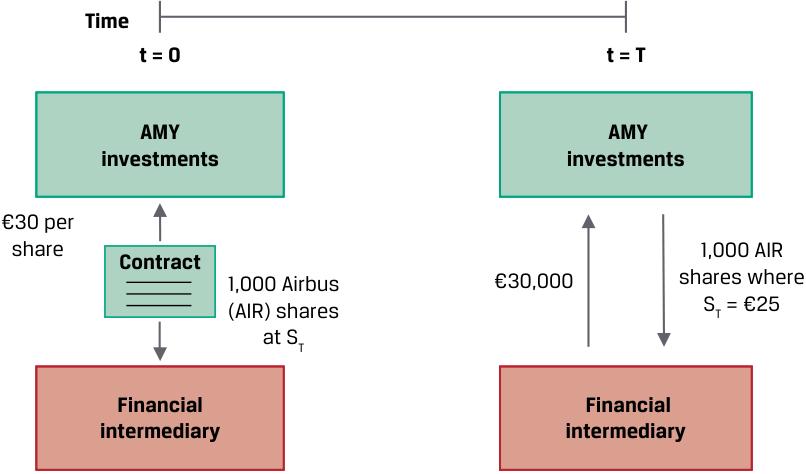
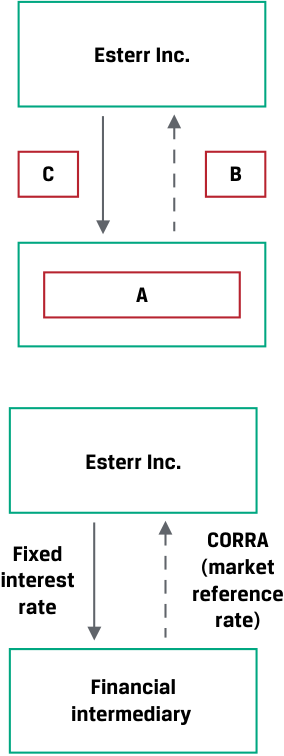
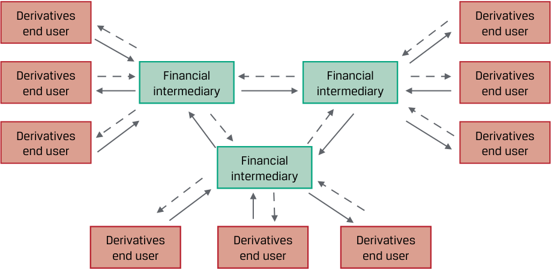
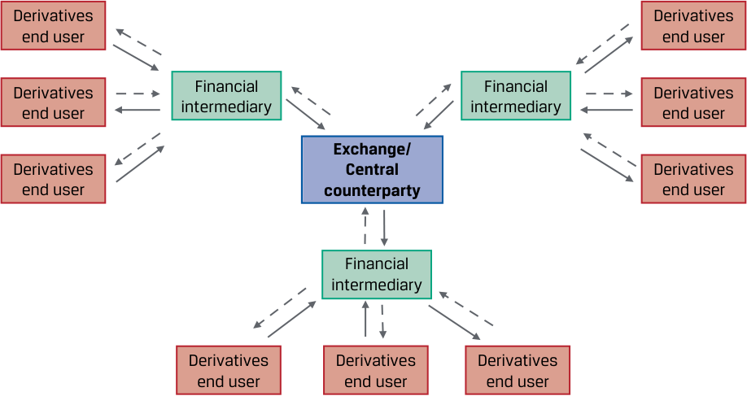
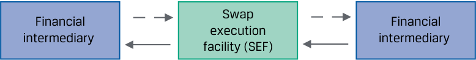
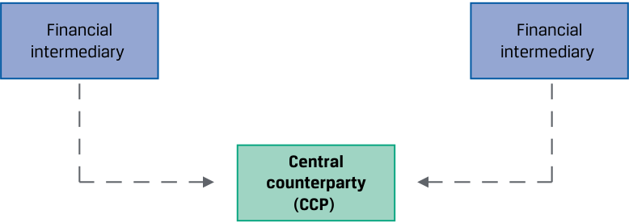
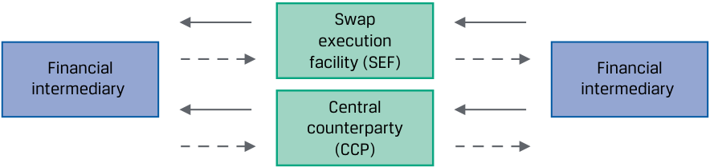
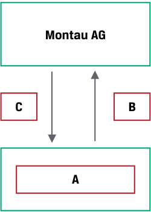
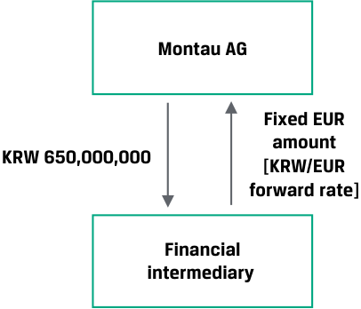

[Toàn Chương] LM01 — Learning Module 1 Derivative Instrument and Derivative Market Features
Volume 7: Derivatives
Learning Module 1 Derivative Instrument and Derivative Market Features
Part 1/2: Introduction (PDF Pages 11–26)
Tập 7: Công cụ Phái sinh (Derivatives)
Học phần 1: Đặc điểm của Công cụ Phái sinh và Thị trường Phái sinh (Derivative Instrument and Derivative Market Features)
Phần 1/2: Giới thiệu (Trang PDF 11–26)
L E A R N I N G M O D U L E 1
H Ọ C P H Ầ N 1
Derivative Instrument and Derivative Market Features
Đặc điểm của Công cụ Phái sinh và Thị trường Phái sinh (Derivative Instrument and Derivative Market Features)
LEARNING OUTCOMES
MỤC TIÊU HỌC TẬP (LEARNING OUTCOMES)
| Mastery | The candidate should be able to: |
|---|---|
| define a derivative and describe basic features of a derivative instrument |
|
| describe the basic features of derivative markets, and contrast over-the-counter and exchange-traded derivative markets |
| Mức độ thành thạo | Ứng viên cần có khả năng: |
|---|---|
| định nghĩa công cụ phái sinh và mô tả các đặc điểm cơ bản của một công cụ phái sinh (derivative instrument) | |
| mô tả các đặc điểm cơ bản của thị trường phái sinh, và đối chiếu giữa thị trường phái sinh phi tập trung (over-the-counter – OTC) và thị trường phái sinh giao dịch trên sở giao dịch (exchange-traded derivative – ETD) |
INTRODUCTION
GIỚI THIỆU (INTRODUCTION)
1
1
Earlier lessons described markets for financial assets related to equities, fixed income, currencies, and commodities. These markets are known as cash markets or spot markets in which specific assets are exchanged at current prices referred to as cash prices or spot prices . Derivatives involve the future exchange of cash flows whose value is derived from or based on an underlying value. The following lessons define and describe features of derivative instruments and derivative markets.
Các bài học trước đã mô tả các thị trường dành cho tài sản tài chính liên quan đến cổ phiếu (equities), thu nhập cố định (fixed income), tiền tệ (currencies), và hàng hóa (commodities). Những thị trường này được gọi là thị trường giao ngay (cash markets hoặc spot markets), nơi các tài sản cụ thể được trao đổi tại mức giá hiện hành được gọi là giá tiền mặt (cash prices) hoặc giá giao ngay (spot prices). Các công cụ phái sinh (derivatives) liên quan đến việc trao đổi các dòng tiền trong tương lai mà giá trị của chúng bắt nguồn từ hoặc dựa trên một giá trị cơ sở (underlying value). Các bài học tiếp theo sẽ định nghĩa và mô tả các đặc điểm của công cụ phái sinh và thị trường phái sinh.
LEARNING MODULE OVERVIEW
TỔNG QUAN HỌC PHẦN (LEARNING MODULE OVERVIEW)
-
A derivative is a financial contract that derives its value from the performance of an underlying asset, which may represent a firm commitment or a contingent claim.
-
Derivative markets expand the set of opportunities available to market participants beyond the cash market to create or modify exposure to an underlying.
-
■ The most common derivative underlyings include equities, fixed income and interest rates, currencies, commodities, and credit.
-
■ Over-the-counter (OTC) derivative markets involve the initiation of customized, flexible contracts between derivatives end users and financial intermediaries.
-
Công cụ phái sinh (derivative) là một hợp đồng tài chính có giá trị bắt nguồn từ hiệu quả hoạt động của một tài sản cơ sở (underlying asset), có thể đại diện cho một cam kết chắc chắn (firm commitment) hoặc một quyền đòi hỏi có điều kiện (contingent claim).
-
Thị trường phái sinh mở rộng tập hợp các cơ hội sẵn có cho những người tham gia thị trường vượt ra ngoài thị trường giao ngay để tạo lập hoặc điều chỉnh mức độ tiếp xúc rủi ro (exposure) đối với một tài sản cơ sở.
-
Các tài sản cơ sở phổ biến nhất của công cụ phái sinh bao gồm cổ phiếu (equities), công cụ thu nhập cố định và lãi suất (fixed income and interest rates), tiền tệ (currencies), hàng hóa (commodities), và tín dụng (credit).
-
Thị trường phái sinh phi tập trung (Over-the-counter – OTC) liên quan đến việc khởi tạo các hợp đồng tùy chỉnh, linh hoạt giữa người sử dụng cuối cùng của công cụ phái sinh (derivatives end users) và các định chế tài chính trung gian (financial intermediaries).
-
Exchange-traded derivatives (ETDs) are standardized contracts traded on an organized exchange, which requires collateral on deposit to protect against counterparty default.
-
For derivatives that are centrally cleared, a central counterparty (CCP) assumes the counterparty credit risk of the derivative counterparties and provides clearing and settlement services.
-
Công cụ phái sinh giao dịch trên sở giao dịch (Exchange-traded derivatives – ETDs) là các hợp đồng được tiêu chuẩn hóa giao dịch trên một sở giao dịch có tổ chức, nơi yêu cầu ký quỹ tài sản thế chấp (collateral on deposit) để bảo vệ trước rủi ro vỡ nợ của đối tác (counterparty default).
-
Đối với các công cụ phái sinh được bù trừ tập trung (centrally cleared), một đối tác trung tâm (central counterparty – CCP) sẽ gánh chịu rủi ro tín dụng đối tác (counterparty credit risk) của các bên tham gia hợp đồng phái sinh và cung cấp dịch vụ bù trừ và thanh toán (clearing and settlement services).
LEARNING MODULE SELF-ASSESSMENT
TỰ ĐÁNH GIÁ HỌC PHẦN (LEARNING MODULE SELF-ASSESSMENT)
These initial questions are intended to help you gauge your current level of understanding of this learning module.
Những câu hỏi ban đầu này nhằm giúp bạn đánh giá mức độ hiểu biết hiện tại của mình về học phần này.
- Which of the following statements does not provide an argument for using a derivative instrument?
-
A. Issuers may offset the financial market exposure associated with a commercial transaction.
-
B. Derivatives typically have lower transaction costs than transacting directly in the underlying.
-
C. Large exposures to an underlying can be created with derivatives for a similar cash outlay.
- Phát biểu nào sau đây không đưa ra lập luận ủng hộ việc sử dụng công cụ phái sinh?
-
A. Các tổ chức phát hành có thể bù đắp mức độ tiếp xúc rủi ro thị trường tài chính gắn liền với một giao dịch thương mại.
-
B. Công cụ phái sinh thường có chi phí giao dịch thấp hơn so với việc giao dịch trực tiếp trên tài sản cơ sở.
-
C. Có thể tạo ra mức độ tiếp xúc rủi ro lớn đối với tài sản cơ sở bằng công cụ phái sinh với một khoản chi tiền mặt tương đương.
Solution:
Lời giải:
C is correct. Derivative contracts create an exposure to the underlying with a small cash outlay, so this is the statement that does not provide an argument for using a derivative instrument. Statements A and B are statements that are valid arguments for using derivatives.
C là đáp án đúng. Hợp đồng phái sinh tạo ra mức độ tiếp xúc rủi ro đối với tài sản cơ sở với một khoản chi tiền mặt nhỏ, do đó đây là phát biểu không đưa ra lập luận hợp lý cho việc sử dụng công cụ phái sinh. Các phát biểu A và B là những lập luận hợp lệ cho việc sử dụng công cụ phái sinh.
- Từ nào sau đây làm cho phát biểu dưới đây trở nên chính xác? Những người tham gia thị trường sử dụng các thỏa thuận phái sinh để trao đổi các dòng tiền trong tương lai dựa trên một _____.
-
A. Tài sản cơ sở (Underlying)
-
B. Quyền chọn (Option)
-
C. Phòng vệ giá (Hedge)
- Which of the following words makes the following statement correct? Market participants use derivative agreements to exchange cash flows in the future based on a(n) _____.
-
A. Underlying
-
B. Option
-
C. Hedge
Lời giải:
Solution:
A là đáp án đúng. Những người tham gia thị trường sử dụng các thỏa thuận phái sinh để trao đổi các dòng tiền trong tương lai dựa trên một tài sản cơ sở (underlying). B không đúng vì quyền chọn (option) đề cập đến một loại hợp đồng phái sinh cụ thể. C không đúng vì phòng vệ giá (hedge) đề cập đến một mục đích cụ thể của việc sử dụng hợp đồng phái sinh.
A is correct. Market participants use derivative agreements to exchange cash flows in the future based on an underlying . B is incorrect because option refers to a specific derivative contract type. C is incorrect because hedge refers to a specific purpose of using a derivative contract.
- Đâu là sự khác biệt đáng kể giữa hợp đồng phái sinh giao dịch trên sở giao dịch (exchange-traded derivative – ETD) và hợp đồng phái sinh phi tập trung (over-the-counter – OTC)?
-
A. ETD tạo ra rủi ro tín dụng đối tác cho người sử dụng phái sinh, trong khi phái sinh OTC thì không.
-
B. ETD là các hợp đồng được tiêu chuẩn hóa, trong khi phái sinh OTC được tùy chỉnh theo yêu cầu.
-
C. ETD có chi phí giao dịch cao hơn so với phái sinh OTC.
- Which of the following is a significant difference between exchange-traded derivative (ETD) and over the counter (OTC) derivative contracts?
-
A. ETDs create counterparty credit risk for derivative users, while OTC derivatives do not.
-
B. ETDs are standardized contracts, while OTC derivatives are customized.
-
C. ETDs have higher transaction costs compared to OTC derivatives.
-
Solution:
Lời giải:
B is correct. Exchanges standardize contracts to facilitate trading volume. However, users often require specific customized features, and the OTC market can accommodate these needs. A is incorrect because exchanges
B là đáp án đúng. Các sở giao dịch tiêu chuẩn hóa hợp đồng để tạo thuận lợi cho khối lượng giao dịch. Tuy nhiên, người dùng thường yêu cầu các tính năng tùy chỉnh cụ thể, và thị trường OTC có thể đáp ứng những nhu cầu này. A không đúng vì các sở giao dịch
bear the counterparty credit risk of derivatives. C is incorrect because ETDs have lower transaction costs compared to OTC derivatives.
gánh chịu rủi ro tín dụng đối tác của các công cụ phái sinh. C không đúng vì ETD có chi phí giao dịch thấp hơn so với phái sinh OTC.
- If a corporate issuer enters into a centrally cleared OTC derivative contract, which of the following risks is likely of most concern to the issuer and other participants in this market?
-
A. Interest rate risk
-
B. Counterparty credit risk
-
C. Systemic risk
-
Solution:
- Nếu một tổ chức phát hành doanh nghiệp tham gia vào một hợp đồng phái sinh OTC được bù trừ tập trung (centrally cleared OTC derivative contract), rủi ro nào sau đây có khả năng là mối quan tâm lớn nhất đối với tổ chức phát hành và những người tham gia khác trên thị trường này?
-
A. Rủi ro lãi suất (Interest rate risk)
-
B. Rủi ro tín dụng đối tác (Counterparty credit risk)
-
C. Rủi ro hệ thống (Systemic risk)
C is correct. Because all the credit risk is taken on by the CCP, all participants in this market are most concerned that the CCP is able to satisfy its obligations to all contracts. A is incorrect because interest rate risk is an underlying risk that can be hedged or managed with certain OTC derivative contracts. B is incorrect because the CCP assumes the credit risk from all parties to the contracts.
Lời giải:
DERIVATIVE FEATURES
C là đáp án đúng. Bởi vì toàn bộ rủi ro tín dụng được đảm nhận bởi đối tác trung tâm (CCP), tất cả những người tham gia trên thị trường này đều quan tâm nhất đến việc liệu CCP có khả năng đáp ứng các nghĩa vụ của mình đối với tất cả các hợp đồng hay không. A không đúng vì rủi ro lãi suất là một rủi ro cơ sở có thể được phòng vệ hoặc quản lý bằng một số hợp đồng phái sinh OTC nhất định. B không đúng vì CCP gánh chịu rủi ro tín dụng từ tất cả các bên tham gia hợp đồng.
2
ĐẶC ĐIỂM CỦA CÔNG CỤ PHÁI SINH (DERIVATIVE FEATURES)
2
define a derivative and describe basic features of a derivative instrument
định nghĩa công cụ phái sinh và mô tả các đặc điểm cơ bản của một công cụ phái sinh
Definition and Features of a Derivative
Định nghĩa và Đặc điểm của một Công cụ Phái sinh (Definition and Features of a Derivative)
A derivative is a financial instrument that derives its value from the performance of an underlying asset. The asset in a derivative is called the underlying . The underlying may not be an individual asset but rather a group of standardized assets or variables, such as interest rates or a credit index.
Một công cụ phái sinh (derivative) là một công cụ tài chính có giá trị bắt nguồn từ hiệu quả hoạt động của một tài sản cơ sở. Tài sản trong một công cụ phái sinh được gọi là tài sản cơ sở (underlying). Tài sản cơ sở có thể không phải là một tài sản riêng lẻ mà là một nhóm các tài sản được tiêu chuẩn hóa hoặc các biến số, chẳng hạn như lãi suất hoặc một chỉ số tín dụng (credit index).
Market participants use derivative agreements to exchange cash flows in the future based on an underlying value. For example, Exhibit 1 shows the one-time future exchange of publicly traded shares of stock at a fixed price in a derivative known as a forward contract .
Những người tham gia thị trường sử dụng các thỏa thuận phái sinh để trao đổi các dòng tiền trong tương lai dựa trên một giá trị cơ sở. Ví dụ, Bảng minh họa 1 (Exhibit 1) cho thấy việc trao đổi một lần trong tương lai đối với các cổ phiếu được giao dịch đại chúng tại một mức giá cố định trong một công cụ phái sinh được gọi là hợp đồng kỳ hạn (forward contract).
Exhibit 1: Forward Contract
Bảng minh họa 1: Hợp đồng Kỳ hạn (Exhibit 1: Forward Contract)

Chú thích hình ảnh: - Thời gian (Time): Tại $t = 0$ (Khởi tạo hợp đồng): AMY Investments ký hợp đồng (Contract) với Định chế tài chính trung gian (Financial intermediary) cho 1.000 cổ phiếu Airbus (AIR) tại mức giá €30 mỗi cổ phiếu (so với giá giao ngay $S_T$). - Tại $t = T$ (Đáo hạn): AMY Investments giao 1.000 cổ phiếu AIR (khi giá giao ngay $S_T = €25$) và nhận về €30.000 từ Định chế tài chính trung gian.
A derivative does not directly pass through the returns of the underlying but transforms the performance of the underlying. In Exhibit 1, AMY Investments agrees today ( t = 0) to deliver 1,000 shares of Airbus (AIR) at a fixed price of €30 per share on a future date ( t = T ), which in our example is in six months. The forward contract allows AMY to transfer the price risk of underlying AIR shares to a second party, or a counterparty , by entering into this derivative contract. If the spot price of AIR ( ST ) is €25 per share at time T in six months, AMY will either receive €30,000 from its counterparty, a financial intermediary, for 1,000 AIR shares now worth just €25,000, or simply settle with the intermediary the €5,000 difference in cash. Derivative transactions usually involve at least one financial intermediary as a counterparty. As we will see later, counterparty credit risk , or the likelihood that a counterparty is unable to meet its financial obligations under the contract, is an important consideration for these instruments.
Một công cụ phái sinh không chuyển giao trực tiếp tỷ suất sinh lợi của tài sản cơ sở mà biến đổi hiệu quả hoạt động của tài sản cơ sở đó. Trong Bảng minh họa 1, AMY Investments đồng ý ngày hôm nay ($t = 0$) sẽ giao 1.000 cổ phiếu của Airbus (AIR) tại mức giá cố định là €30 mỗi cổ phiếu vào một ngày trong tương lai ($t = T$), trong ví dụ của chúng ta là sau sáu tháng. Hợp đồng kỳ hạn cho phép AMY chuyển giao rủi ro giá của cổ phiếu AIR cơ sở sang một bên thứ hai, hay một đối tác (counterparty), bằng cách tham gia vào hợp đồng phái sinh này. Nếu giá giao ngay của AIR ($S_T$) là €25 mỗi cổ phiếu tại thời điểm $T$ sau sáu tháng, AMY sẽ nhận được €30.000 từ đối tác của mình (một định chế tài chính trung gian) cho 1.000 cổ phiếu AIR hiện chỉ có giá trị €25.000, hoặc đơn giản là thanh toán với định chế trung gian khoản chênh lệch €5.000 bằng tiền mặt. Các giao dịch phái sinh thường có sự tham gia của ít nhất một định chế tài chính trung gian làm đối tác. Như chúng ta sẽ thấy sau này, rủi ro tín dụng đối tác (counterparty credit risk), hay khả năng một đối tác không thể đáp ứng các nghĩa vụ tài chính của mình theo hợp đồng, là một yếu tố quan trọng cần cân nhắc đối với các công cụ này.
A derivative contract is a legal agreement between counterparties with a specific maturity , or length of time until the closing of the transaction, or settlement . The buyer of a derivative enters a contract whose value changes in a way similar to a long position in the underlying, and the seller has exposure similar to a short position. The contract size (sometimes referred to as notional principal or amount) is agreed upon at the outset and may remain constant or change over time.
Một hợp đồng phái sinh (derivative contract) là một thỏa thuận pháp lý giữa các đối tác với một kỳ hạn (maturity) cụ thể, hay khoảng thời gian cho đến khi đóng giao dịch, hoặc thanh toán (settlement). Người mua một công cụ phái sinh tham gia vào một hợp đồng có giá trị thay đổi theo cách tương tự như một vị thế mua (long position) đối với tài sản cơ sở, và người bán có mức độ tiếp xúc rủi ro tương tự như một vị thế bán (short position). Quy mô hợp đồng (contract size) (đôi khi được gọi là vốn gốc danh nghĩa hay giá trị danh nghĩa – notional principal or amount) được thỏa thuận ngay từ đầu và có thể giữ nguyên không đổi hoặc thay đổi theo thời gian.
Exhibit 1 is an example of a stand-alone derivative , a distinct derivative contract, such as a derivative on a stock or bond. An embedded derivative is a derivative within an underlying, such as a callable, puttable, or convertible bond. Exhibit 2 provides a sample term sheet that includes key features of AMY Investment’s stand-alone forward contract with a financial intermediary.
Bảng minh họa 1 là một ví dụ về công cụ phái sinh độc lập (stand-alone derivative), một hợp đồng phái sinh riêng biệt, chẳng hạn như một công cụ phái sinh trên cổ phiếu hoặc trái phiếu. Một công cụ phái sinh đi kèm (embedded derivative) là một công cụ phái sinh nằm bên trong một tài sản cơ sở, chẳng hạn như trái phiếu có quyền mua lại (callable bond), trái phiếu có quyền bán lại (puttable bond), hoặc trái phiếu chuyển đổi (convertible bond). Bảng minh họa 2 cung cấp một bản tóm tắt điều khoản (term sheet) mẫu bao gồm các đặc điểm chính của hợp đồng kỳ hạn độc lập giữa AMY Investments với một định chế tài chính trung gian.
Exhibit 2: Sample Forward Contract Term Sheet
Bảng minh họa 2: Bản tóm tắt điều khoản Hợp đồng Kỳ hạn mẫu (Exhibit 2: Sample Forward Contract Term Sheet)
| Contract Type: | Forward Transac | tion Term Sheet |
|---|---|---|
| Firm commitment or contin- | ||
| gent right to exchange future cash flows |
||
| l Maturity: |
Start Date: | [Spot start] |
| Final date upon which payment | Maturity Date: | [Six months from Start Date] |
| or settlement occurs |
| Đặc điểm hợp đồng | Bản tóm tắt điều khoản Giao dịch Kỳ hạn (Forward Transaction Term Sheet) | |
|---|---|---|
| Loại hợp đồng (Contract Type): Cam kết chắc chắn (firm commitment) hoặc quyền đòi hỏi có điều kiện (contingent right) để trao đổi các dòng tiền trong tương lai |
||
| Kỳ hạn (Maturity): Ngày cuối cùng mà việc chi trả hoặc thanh toán diễn ra |
Ngày bắt đầu (Start Date): | [Bắt đầu giao ngay (Spot start)] |
| Ngày đáo hạn (Maturity Date): | [Sáu tháng kể từ Ngày bắt đầu] |
| Counterparties: | Forward | [Financial Intermediary] |
|---|---|---|
| Legal entities entering the | Purchaser: | |
| derivative contract | Forward Seller: | AMY Investments |
| Underlying: | Forward | 1,000 shares of Airbus (AIR) com- |
| Reference asset or variable used as source for contract value Contract Size: Amount(s) used for calculation to price and value the derivative |
Delivery: | mon stock traded on the Frankfurt Stock Exchange |
| Underlying Price: | Forward Price: | €30 per share |
| Pre-agreed price for com- mitment or contingent claim settlement |
||
| Contract Details | Business Days: Documentation: |
Frankfurt ISDA Agreement and credit terms acceptable to both parties |
| Đặc điểm hợp đồng | Bản tóm tắt điều khoản Giao dịch Kỳ hạn (Forward Transaction Term Sheet) | |
|---|---|---|
| Các đối tác (Counterparties): Các pháp nhân tham gia vào hợp đồng phái sinh |
Bên mua kỳ hạn (Forward Purchaser): | [Định chế tài chính trung gian (Financial Intermediary)] |
| Bên bán kỳ hạn (Forward Seller): | AMY Investments | |
| Tài sản cơ sở (Underlying): Tài sản hoặc biến số tham chiếu được sử dụng làm nguồn xác định giá trị hợp đồng Quy mô hợp đồng (Contract Size): Số lượng/giá trị được sử dụng để tính toán định giá và xác định giá trị công cụ phái sinh |
Giao hàng kỳ hạn (Forward Delivery): | 1.000 cổ phiếu phổ thông của Airbus (AIR) được giao dịch trên Sở Giao dịch Chứng khoán Frankfurt (Frankfurt Stock Exchange) |
| Giá cơ sở (Underlying Price): Mức giá thỏa thuận trước để thanh toán cam kết chắc chắn hoặc quyền đòi hỏi có điều kiện |
Giá kỳ hạn (Forward Price): | €30 mỗi cổ phiếu |
| Chi tiết hợp đồng (Contract Details): | Ngày làm việc (Business Days): Hồ sơ pháp lý (Documentation): |
Frankfurt Thỏa thuận ISDA (ISDA Agreement) và các điều khoản tín dụng được cả hai bên chấp thuận |
The derivative between AMY and the financial intermediary is a firm commitment , in which a pre-determined amount is agreed to be exchanged at settlement. Firm commitments include forward contracts, futures contracts, and swaps involving a periodic exchange of cash flows. Another type of derivative is a contingent claim , in which one of the counterparties determines whether and when the trade will settle. An option is the primary contingent claim.
Công cụ phái sinh giữa AMY và định chế tài chính trung gian là một cam kết chắc chắn (firm commitment), trong đó một khoản tiền được xác định trước được thỏa thuận sẽ trao đổi khi thanh toán. Các cam kết chắc chắn bao gồm hợp đồng kỳ hạn (forward contracts), hợp đồng tương lai (futures contracts), và hợp đồng hoán đổi (swaps) liên quan đến việc trao đổi định kỳ các dòng tiền. Một loại công cụ phái sinh khác là quyền đòi hỏi có điều kiện (contingent claim), trong đó một trong các đối tác sẽ quyết định liệu giao dịch có được thanh toán hay không và vào thời điểm nào. Quyền chọn (option) là quyền đòi hỏi có điều kiện chính yếu.
Derivative markets expand the set of opportunities available to market participants to create or modify exposure to an underlying in several ways:
Thị trường phái sinh mở rộng tập hợp các cơ hội sẵn có cho những người tham gia thị trường để tạo lập hoặc điều chỉnh mức độ tiếp xúc rủi ro đối với một tài sản cơ sở theo nhiều cách:
-
Investors can sell short to benefit from an expected decline in the value of the underlying.
-
Investors may use derivatives as a tool for portfolio diversification.
-
Issuers may offset the financial market exposure associated with a commercial transaction.
-
Market participants may create large exposures to an underlying with a relatively small cash outlay.
-
Derivatives typically have lower transaction costs and are often more liquid than underlying spot market transactions.
-
Các nhà đầu tư có thể bán khống (sell short) để hưởng lợi từ sự sụt giảm kỳ vọng trong giá trị của tài sản cơ sở.
-
Các nhà đầu tư có thể sử dụng công cụ phái sinh như một công cụ để đa dạng hóa danh mục đầu tư (portfolio diversification).
-
Các tổ chức phát hành có thể bù đắp mức độ tiếp xúc rủi ro thị trường tài chính gắn liền với một giao dịch thương mại.
-
Những người tham gia thị trường có thể tạo ra mức độ tiếp xúc rủi ro lớn đối với một tài sản cơ sở với một khoản chi tiền mặt tương đối nhỏ.
-
Các công cụ phái sinh thường có chi phí giao dịch thấp hơn và thường có tính thanh khoản cao hơn so với các giao dịch trên thị trường giao ngay của tài sản cơ sở.
Issuers and investors use derivatives to increase or decrease financial market exposures. For example, use of a derivative to offset or neutralize existing or anticipated exposure to an underlying is referred to as hedging , with the derivative itself commonly described as a hedge of the underlying transaction.
Các tổ chức phát hành và nhà đầu tư sử dụng công cụ phái sinh để làm tăng hoặc giảm mức độ tiếp xúc rủi ro trên thị trường tài chính. Ví dụ, việc sử dụng một công cụ phái sinh để bù đắp hoặc trung hòa mức độ tiếp xúc rủi ro hiện có hoặc dự kiến đối với một tài sản cơ sở được gọi là phòng vệ giá (hedging), với bản thân công cụ phái sinh đó thường được mô tả là một công cụ phòng vệ (hedge) cho giao dịch cơ sở.
QUESTION SET
BỘ CÂU HỎI (QUESTION SET)
Derivative Features
Đặc điểm của Công cụ Phái sinh (Derivative Features)
- Identify one reason why an issuer may use a derivative instrument.
- Hãy xác định một lý do tại sao một tổ chức phát hành có thể sử dụng công cụ phái sinh.
Solution:
Lời giải:
An issuer may use a derivative to offset the financial market exposure associated with a commercial transaction. An issuer may also use a derivative to offset or neutralize existing or anticipated exposure to an underlying.
Một tổ chức phát hành có thể sử dụng công cụ phái sinh để bù đắp mức độ tiếp xúc rủi ro thị trường tài chính gắn liền với một giao dịch thương mại. Tổ chức phát hành cũng có thể sử dụng công cụ phái sinh để bù đắp hoặc trung hòa mức độ tiếp xúc rủi ro hiện có hoặc dự kiến đối với một tài sản cơ sở.
- Identify which example corresponds to each of the following stand-alone or embedded derivative contract types:
- Hãy xác định ví dụ nào tương ứng với từng loại hợp đồng phái sinh độc lập (stand-alone) hoặc phái sinh đi kèm (embedded) sau đây:
A. Firm commitment 1. Callable bond
| Loại hợp đồng | Ví dụ |
|---|---|
| A. Cam kết chắc chắn (Firm commitment) | 1. Trái phiếu có quyền mua lại (Callable bond) |
| B. Quyền đòi hỏi có điều kiện (Contingent claim) | 2. Hợp đồng giao khí đốt tự nhiên giá cố định (Fixed-price natural gas delivery contract) |
| C. Không phải cam kết chắc chắn cũng không phải quyền đòi hỏi có điều kiện | 3. Giao dịch mua chứng chỉ quỹ hoán đổi danh mục (exchange-traded fund – ETF) Chỉ số FTSE 100 |
B. Contingent claim
Lời giải:
- Fixed-price natural gas delivery
-
contract
-
C. Neither a firm commitment nor a contingent claim exchange-traded fund (ETF)
- Purchase of a FTSE 100 Index
Solution:
-
B là đáp án đúng. Trái phiếu có quyền mua lại (callable bond) là một ví dụ về công cụ phái sinh đi kèm nằm bên trong một tài sản cơ sở, đây là một quyền đòi hỏi có điều kiện (contingent claim).
-
A là đáp án đúng. Hợp đồng giao khí đốt tự nhiên giá cố định là một ví dụ về hợp đồng cam kết chắc chắn (firm commitment) với khí đốt tự nhiên là tài sản cơ sở.
-
C là đáp án đúng. Quỹ hoán đổi danh mục (ETF) Chỉ số FTSE 100 không phải là cam kết chắc chắn cũng không phải là quyền đòi hỏi có điều kiện, mà là một ví dụ về giao dịch trên thị trường tiền mặt hoặc giao ngay (cash or spot market transaction).
-
Xác định các câu trả lời đúng để điền vào chỗ trống: Cổ phiếu là một ví dụ về __ của công cụ phái sinh, và một _______ là một pháp nhân tham gia vào một hợp đồng phái sinh.
-
B is correct. A callable bond is an example of an embedded derivative within an underlying, which is a contingent claim.
-
A is correct. A fixed-price gas delivery contract is an example of a contract, which is a firm commitment with natural gas as the underlying.
-
C is correct. A FTSE 100 Index exchange-traded fund (ETF) is neither a firm commitment nor a contingent claim but rather an example of a cash or spot market transaction.
-
Determine the correct answers to fill in the blanks: Equities are an example of a derivative __, and a _______ is a legal entity entering a derivative contract.
Lời giải:
Solution:
Cổ phiếu là một ví dụ về tài sản cơ sở (underlying) của công cụ phái sinh, và một đối tác (counterparty) là một pháp nhân tham gia vào một hợp đồng phái sinh.
Equities are an example of a derivative underlying , and a counterparty is a legal entity entering a derivative contract.
- Mô tả việc sử dụng một công cụ phái sinh cho mục đích phòng vệ giá (hedging).
- Describe the use of a derivative for hedging purposes.
Lời giải:
Solution:
Việc sử dụng một công cụ phái sinh cho mục đích phòng vệ giá liên quan đến việc bù đắp hoặc trung hòa một mức độ tiếp xúc rủi ro hiện có hoặc dự kiến đối với một tài sản cơ sở, được gọi là phòng vệ giá (hedging).
Use of a derivative for hedging purposes involves offsetting or neutralizing an existing or anticipated exposure to an underlying, referred to as hedging.
- Giải thích việc thanh toán (settlement) của một hợp đồng kỳ hạn (forward contract).
- Explain the settlement of a forward contract.
Lời giải:
Solution:
A forward contract is a firm commitment. This contract results in a settlement payment on the maturity date equal to the difference between the current market price and a pre-agreed forward price.
Hợp đồng kỳ hạn là một cam kết chắc chắn (firm commitment). Hợp đồng này dẫn đến một khoản chi trả thanh toán vào ngày đáo hạn bằng với phần chênh lệch giữa giá thị trường hiện hành và mức giá kỳ hạn đã thỏa thuận trước.
3 DERIVATIVE UNDERLYINGS
3 TÀI SẢN CƠ SỞ CỦA CÔNG CỤ PHÁI SINH (DERIVATIVE UNDERLYINGS)
define a derivative and describe basic features of a derivative instrument
định nghĩa công cụ phái sinh và mô tả các đặc điểm cơ bản của một công cụ phái sinh
Derivatives are typically grouped by the underlying from which their value is derived. A derivative contract may reference more than one underlying. The most common derivative underlyings include equities, fixed income and interest rates, currencies, commodities, and credit.
Các công cụ phái sinh thường được phân nhóm theo tài sản cơ sở mà từ đó giá trị của chúng được hình thành. Một hợp đồng phái sinh có thể tham chiếu đến nhiều hơn một tài sản cơ sở. Các tài sản cơ sở phổ biến nhất của công cụ phái sinh bao gồm cổ phiếu (equities), công cụ thu nhập cố định và lãi suất (fixed income and interest rates), tiền tệ (currencies), hàng hóa (commodities), và tín dụng (credit).
Equities
Cổ phiếu (Equities)
Equity derivatives usually reference an individual stock, a group of stocks, or a stock index, such as the FTSE 100. Options are the most common derivatives on individual stocks. Index derivatives are commonly traded as options, forwards, futures, and swaps.
Các công cụ phái sinh cổ phiếu (equity derivatives) thường tham chiếu đến một cổ phiếu riêng lẻ, một nhóm cổ phiếu, hoặc một chỉ số cổ phiếu (stock index), chẳng hạn như chỉ số FTSE 100. Quyền chọn (options) là các công cụ phái sinh phổ biến nhất trên các cổ phiếu riêng lẻ. Các công cụ phái sinh chỉ số (index derivatives) thường được giao dịch dưới dạng quyền chọn, hợp đồng kỳ hạn, hợp đồng tương lai, và hợp đồng hoán đổi.
Index swaps, or equity swaps, allow the investor to pay the return on one stock index and receive the return on another index or interest rate. An investment manager can use index swaps to increase or reduce exposure to an equity market or sector without trading the individual shares. These swaps are widely used in top-down asset allocation strategies. Finally, options, futures, and swaps are available based upon the realized volatility of equity index prices over a certain period. These contracts allow market participants to manage the risk, or dispersion, of price changes separately from the direction of equity price changes.
Hợp đồng hoán đổi chỉ số (index swaps), hay hợp đồng hoán đổi cổ phiếu (equity swaps), cho phép nhà đầu tư trả tỷ suất sinh lợi trên một chỉ số cổ phiếu và nhận về tỷ suất sinh lợi trên một chỉ số khác hoặc một mức lãi suất. Nhà quản lý đầu tư có thể sử dụng hợp đồng hoán đổi chỉ số để tăng hoặc giảm mức độ tiếp xúc rủi ro đối với một thị trường cổ phiếu hoặc một nhóm ngành mà không cần giao dịch từng cổ phiếu riêng lẻ. Những hợp đồng hoán đổi này được sử dụng rộng rãi trong các chiến lược phân bổ tài sản từ trên xuống (top-down asset allocation strategies). Cuối cùng, các quyền chọn, hợp đồng tương lai, và hợp đồng hoán đổi cũng có sẵn dựa trên độ biến động thực tế (realized volatility) của giá chỉ số cổ phiếu trong một khoảng thời gian nhất định. Các hợp đồng này cho phép những người tham gia thị trường quản lý rủi ro, hay độ phân tán (dispersion), của các biến động giá một cách tách biệt khỏi xu hướng biến động giá cổ phiếu.
Options on individual stocks are purchased and sold by investors and frequently used by issuers as compensation for their executives and employees. Stock options are granted to provide incentives to work toward stronger corporate performance in the expectation of higher stock prices. Stock options can result in companies paying lower cash compensation. Companies may also issue warrants, which are options granted to employees or sold to the public that allow holders to purchase shares at a fixed price in the future directly from the issuer.
Quyền chọn trên các cổ phiếu riêng lẻ được mua và bán bởi các nhà đầu tư và thường xuyên được các tổ chức phát hành sử dụng làm thù lao cho các giám đốc điều hành và nhân viên của họ. Quyền chọn cổ phiếu cho nhân viên (stock options) được cấp nhằm tạo động lực làm việc hướng tới hiệu quả hoạt động doanh nghiệp mạnh mẽ hơn với kỳ vọng giá cổ phiếu sẽ cao hơn. Quyền chọn cổ phiếu có thể giúp các công ty trả mức thù lao bằng tiền mặt thấp hơn. Các công ty cũng có thể phát hành chứng quyền (warrants), là các quyền chọn được cấp cho nhân viên hoặc bán cho công chúng cho phép người nắm giữ mua cổ phiếu tại một mức giá cố định trong tương lai trực tiếp từ tổ chức phát hành.
Fixed-Income Instruments
Công cụ Thu nhập Cố định (Fixed-Income Instruments)
Bonds are a widely used underlying, and related derivatives include options, forwards, futures, and swaps. Government issuers, such as the US Treasury or Japanese Ministry of Finance, usually have many bond issues outstanding. A single standardized futures contract associated with such bonds therefore often specifies parameters that allow more than one bond issue to be delivered to settle the contract.
Trái phiếu là một tài sản cơ sở được sử dụng rộng rãi, và các công cụ phái sinh liên quan bao gồm quyền chọn, hợp đồng kỳ hạn, hợp đồng tương lai, và hợp đồng hoán đổi. Các tổ chức phát hành chính phủ, chẳng hạn như Bộ Tài chính Hoa Kỳ (US Treasury) hoặc Bộ Tài chính Nhật Bản (Japanese Ministry of Finance), thường có nhiều đợt phát hành trái phiếu đang lưu hành. Do đó, một hợp đồng tương lai được tiêu chuẩn hóa đơn lẻ gắn với các trái phiếu như vậy thường quy định các thông số cho phép nhiều hơn một đợt phát hành trái phiếu có thể được dùng để giao hàng nhằm thanh toán hợp đồng.
An interest rate is not an asset but rather a fixed-income underlying used in many interest rate derivatives, such as forwards, futures, and options. Interest rate swaps are a type of firm commitment frequently used by market participants to convert from fixed to floating interest rate exposure over a certain period. For example, an investment manager can use interest rate swaps to increase or reduce portfolio duration without trading bonds. An issuer, on the other hand, might use an interest rate swap to alter the interest rate exposure profile of its liabilities.
Lãi suất không phải là một tài sản mà là một biến số cơ sở thu nhập cố định (fixed-income underlying) được sử dụng trong nhiều công cụ phái sinh lãi suất, chẳng hạn như hợp đồng kỳ hạn, hợp đồng tương lai, và quyền chọn. Hợp đồng hoán đổi lãi suất (interest rate swaps) là một loại cam kết chắc chắn thường xuyên được những người tham gia thị trường sử dụng để chuyển đổi từ mức độ tiếp xúc rủi ro lãi suất cố định sang lãi suất thả nổi trong một khoảng thời gian nhất định. Ví dụ, một nhà quản lý đầu tư có thể sử dụng hợp đồng hoán đổi lãi suất để tăng hoặc giảm thời lượng (duration) của danh mục đầu tư mà không cần giao dịch trái phiếu. Mặt khác, một tổ chức phát hành có thể sử dụng hợp đồng hoán đổi lãi suất để thay đổi cấu trúc tiếp xúc rủi ro lãi suất của các khoản nợ phải trả của mình.
A market reference rate (MRR) is the most common interest rate underlying used in interest rate swaps. These rates typically match those of loans or other short-term obligations. Survey-based Libor rates used as reference rates in the past have been replaced by rates based on a daily average of observed market transaction rates. For example, the Secured Overnight Financing Rate (SOFR) is an overnight cash borrowing rate collateralized by US Treasuries. Other MRRs include the euro short-term rate (€STR) and the Sterling Overnight Index Average (SONIA).
Lãi suất tham chiếu thị trường (market reference rate – MRR) là biến số cơ sở lãi suất phổ biến nhất được sử dụng trong các hợp đồng hoán đổi lãi suất. Các mức lãi suất này thường khớp với lãi suất của các khoản vay hoặc các nghĩa vụ nợ ngắn hạn khác. Lãi suất Libor dựa trên khảo sát được sử dụng làm lãi suất tham chiếu trong quá khứ đã được thay thế bằng các mức lãi suất dựa trên mức trung bình hàng ngày của các lãi suất giao dịch thị trường quan sát được. Ví dụ, Lãi suất Tài trợ Qua đêm Có bảo đảm (Secured Overnight Financing Rate – SOFR) là mức lãi suất vay tiền mặt qua đêm được thế chấp bằng Trái phiếu Kho bạc Hoa Kỳ. Các lãi suất MRR khác bao gồm lãi suất ngắn hạn đồng euro (euro short-term rate – €STR) và Lãi suất Trung bình Chỉ số Qua đêm Đồng Bảng Anh (Sterling Overnight Index Average – SONIA).
Currencies
Tiền tệ (Currencies)
Market participants frequently use derivatives to hedge the exposure of commercial and financial transactions that arise due to foreign exchange risk. For example, exporters often enter into forward contracts to sell foreign currency and purchase domestic currency under terms matching those of a delivery contract for goods or services in a foreign country. Alternatively, an investor might sell futures on a particular currency while retaining a securities portfolio denominated in that currency to benefit from a temporary decline in the value of that currency. Options, forwards, futures, and swaps based upon sovereign bonds and exchange rates are used to manage currency risk.
Những người tham gia thị trường thường xuyên sử dụng các công cụ phái sinh để phòng vệ mức độ tiếp xúc rủi ro của các giao dịch thương mại và tài chính phát sinh do rủi ro tỷ giá hối đoái (foreign exchange risk). Ví dụ, các nhà xuất khẩu thường tham gia vào các hợp đồng kỳ hạn để bán ngoại tệ và mua nội tệ theo các điều khoản khớp với điều khoản của hợp đồng giao hàng hóa hoặc dịch vụ tại một quốc gia nước ngoài. Ngoài ra, một nhà đầu tư có thể bán hợp đồng tương lai trên một đồng tiền cụ thể trong khi vẫn giữ lại một danh mục chứng khoán được định giá bằng đồng tiền đó để hưởng lợi từ sự sụt giảm tạm thời trong giá trị của đồng tiền đó. Các quyền chọn, hợp đồng kỳ hạn, hợp đồng tương lai, và hợp đồng hoán đổi dựa trên trái phiếu chính phủ và tỷ giá hối đoái được sử dụng để quản lý rủi ro tiền tệ.
Commodities
Hàng hóa (Commodities)
Cash or spot markets for soft and hard commodities involve the physical delivery of the underlying upon settlement. Soft commodities are agricultural products, such as cattle and corn, and hard commodities are natural resources, such as crude oil and metals. Commodity derivatives are widely used to manage either the price risk of an individual commodity or a commodity index separate from physical delivery. For example, an airline, shipping, or freight company might purchase oil futures as a hedge against rising operating expenses due to higher fuel costs. An investor might purchase a commodity index futures contract to increase exposure to commodity prices without taking physical delivery of the underlying.
Thị trường tiền mặt hoặc giao ngay đối với hàng hóa mềm (soft commodities) và hàng hóa cứng (hard commodities) liên quan đến việc giao hàng vật chất (physical delivery) tài sản cơ sở khi thanh toán. Hàng hóa mềm (soft commodities) là các sản phẩm nông nghiệp, chẳng hạn như gia súc và ngô, còn hàng hóa cứng (hard commodities) là các tài nguyên thiên nhiên, chẳng hạn như dầu thô và kim loại. Các công cụ phái sinh hàng hóa được sử dụng rộng rãi để quản lý rủi ro giá của một loại hàng hóa riêng lẻ hoặc một chỉ số hàng hóa một cách tách biệt khỏi việc giao hàng vật chất. Ví dụ, một hãng hàng không, công ty vận tải biển, hoặc công ty vận chuyển hàng hóa có thể mua hợp đồng tương lai dầu mỏ để làm công cụ phòng vệ trước sự gia tăng chi phí hoạt động do chi phí nhiên liệu cao hơn. Một nhà đầu tư có thể mua một hợp đồng tương lai chỉ số hàng hóa để gia tăng mức độ tiếp xúc với giá hàng hóa mà không cần nhận giao hàng vật chất đối với tài sản cơ sở.
Credit
Tín dụng (Credit)
Credit derivative contracts are based upon the default risk of a single issuer or a group of issuers in an index. Credit default swaps (CDS) allow an investor to manage the risk of loss from borrower default separately from the bond market. CDS contracts trade on a spread that represents the likelihood of default. For example, an investor might buy or sell a CDS contract on a high-yield index to change its portfolio exposure to high-yield credit without buying or selling the underlying bonds. Alternatively, a bank may purchase a CDS contract to offset existing credit exposure to an issuer’s potential default.
Các hợp đồng phái sinh tín dụng (credit derivative contracts) dựa trên rủi ro vỡ nợ (default risk) của một tổ chức phát hành đơn lẻ hoặc một nhóm các tổ chức phát hành trong một chỉ số. Hợp đồng hoán đổi rủi ro tín dụng (Credit default swaps – CDS) cho phép nhà đầu tư quản lý rủi ro tổn thất từ việc người đi vay vỡ nợ một cách tách biệt khỏi thị trường trái phiếu. Các hợp đồng CDS được giao dịch dựa trên một mức chênh lệch (spread) đại diện cho khả năng xảy ra vỡ nợ. Ví dụ, một nhà đầu tư có thể mua hoặc bán một hợp đồng CDS trên một chỉ số trái phiếu lợi suất cao (high-yield index) để thay đổi mức độ tiếp xúc của danh mục đầu tư đối với tín dụng lợi suất cao mà không cần mua hoặc bán các trái phiếu cơ sở. Ngoài ra, một ngân hàng có thể mua một hợp đồng CDS để bù đắp mức độ tiếp xúc rủi ro tín dụng hiện có trước khả năng vỡ nợ tiềm tàng của một tổ chức phát hành.
Other
Các tài sản cơ sở khác (Other)
Other derivative underlyings include weather, cryptocurrencies, and longevity, all of which can influence the financial performance of various market participants. For example, longevity risk is important to insurance companies and defined benefit pension plans that face exposure to increased life expectancy. Derivatives based upon these underlyings are less common and more difficult to price. Exhibit 3 provides a summary of common underlyings.
Các tài sản cơ sở phái sinh khác bao gồm thời tiết (weather), tiền mã hóa (cryptocurrencies), và tuổi thọ (longevity), tất cả đều có thể ảnh hưởng đến hiệu quả tài chính của nhiều đối tượng tham gia thị trường khác nhau. Ví dụ, rủi ro tuổi thọ (longevity risk) rất quan trọng đối với các công ty bảo hiểm và các quỹ hưu trí có mức hưởng xác định (defined benefit pension plans) vốn phải đối mặt với mức độ tiếp xúc rủi ro trước sự gia tăng kỳ vọng sống (life expectancy). Các công cụ phái sinh dựa trên những tài sản cơ sở này ít phổ biến hơn và khó định giá hơn. Bảng minh họa 3 cung cấp tóm tắt về các tài sản cơ sở phổ biến.
Exhibit 3: Common Derivative Underlyings
Bảng minh họa 3: Các Tài sản Cơ sở Phổ biến của Công cụ Phái sinh (Exhibit 3: Common Derivative Underlyings)
| Asset Class | Examples | Sample Uses |
|---|---|---|
| Equities | Individual stocks Equity indexes Equity price volatility |
Change exposure profile (Investors) Employee compensation (Issuers) |
| Interest Rates | Sovereign bonds (domestic) Market reference rates |
Change duration exposure (Investors) Alter debt exposure profile (Issuers) |
| Foreign | Sovereign bonds (for- | Manage global portfolio risks (Investors) |
| Exchange | eign) Market exchange rates |
Manage global trade risks (Issuers) |
| Commodities | Soft and hard commod- ities Commodity indexes |
Manage operating risks (Consumers/ Producers) Portfolio diversification (Investors) |
| Loại tài sản (Asset Class) | Ví dụ (Examples) | Ứng dụng mẫu (Sample Uses) |
|---|---|---|
| Cổ phiếu (Equities) | Các cổ phiếu riêng lẻ (Individual stocks) Các chỉ số cổ phiếu (Equity indexes) Độ biến động giá cổ phiếu (Equity price volatility) |
Thay đổi cấu trúc tiếp xúc rủi ro (Nhà đầu tư) Thù lao cho nhân viên (Tổ chức phát hành) |
| Lãi suất (Interest Rates) | Trái phiếu chính phủ nội địa (Sovereign bonds - domestic) Lãi suất tham chiếu thị trường (Market reference rates) |
Thay đổi mức độ tiếp xúc thời lượng – duration (Nhà đầu tư) Thay đổi cấu trúc tiếp xúc rủi ro nợ (Tổ chức phát hành) |
| Ngoại hối (Foreign Exchange) | Trái phiếu chính phủ nước ngoài (Sovereign bonds - foreign) Tỷ giá hối đoái thị trường (Market exchange rates) |
Quản lý rủi ro danh mục đầu tư toàn cầu (Nhà đầu tư) Quản lý rủi ro thương mại toàn cầu (Tổ chức phát hành) |
| Hàng hóa (Commodities) | Hàng hóa mềm và hàng hóa cứng (Soft and hard commodities) Các chỉ số hàng hóa (Commodity indexes) |
Quản lý rủi ro hoạt động (Người tiêu dùng/Nhà sản xuất) Đa dạng hóa danh mục đầu tư (Nhà đầu tư) |
| Asset Class | Examples | Sample Uses |
|---|---|---|
| Credit | Individual refence | Portfolio diversification (Investors) |
| entities Credit indexes |
i Manage credit risk (Financial Intermediaries) |
|
| Other | Weather Cryptocurrencies Longevity |
Manage operating risks (Issuers) Manage portfolio risks (Investors) |
| Loại tài sản (Asset Class) | Ví dụ (Examples) | Ứng dụng mẫu (Sample Uses) |
|---|---|---|
| Tín dụng (Credit) | Các thực thể tham chiếu riêng lẻ (Individual reference entities) Các chỉ số tín dụng (Credit indexes) |
Đa dạng hóa danh mục đầu tư (Nhà đầu tư) Quản lý rủi ro tín dụng (Định chế tài chính trung gian) |
| Khác (Other) | Thời tiết (Weather) Tiền mã hóa (Cryptocurrencies) Tuổi thọ (Longevity) |
Quản lý rủi ro hoạt động (Tổ chức phát hành) Quản lý rủi ro danh mục đầu tư (Nhà đầu tư) |
RARE EARTH FUTURES AND THE LME LITHIUM CONTRACT
HỢP ĐỒNG TƯƠNG LAI ĐẤT HIẾM VÀ HỢP ĐỒNG LITHIUM TRÊN SÀN LME (RARE EARTH FUTURES AND THE LME LITHIUM CONTRACT)
Derivative underlyings continue to adapt to the growing importance of environmental, social, and governance (ESG) factors affecting commercial and financial markets. For example, as the automotive industry shifts from internal combustion engine technology to electric vehicle (EV) production due to environmental concerns, demand for rare earth metals, such as lithium, as inputs into the EV battery production process are of increasing importance.
Các tài sản cơ sở của công cụ phái sinh tiếp tục thích ứng với tầm quan trọng ngày càng tăng của các yếu tố môi trường, xã hội và quản trị (environmental, social, and governance – ESG) đang tác động đến các thị trường thương mại và tài chính. Ví dụ, khi ngành công nghiệp ô tô chuyển dịch từ công nghệ động cơ đốt trong sang sản xuất xe điện (electric vehicle – EV) do các mối quan ngại về môi trường, nhu cầu đối với các kim loại đất hiếm và kim loại pin, chẳng hạn như lithium, làm nguyên liệu đầu vào cho quá trình sản xuất pin xe điện ngày càng trở nên quan trọng.
In response to growing demand from commodity producers and end users as well as investors, the London Metal Exchange (LME) introduced a lithium futures contract in 2021. The LME lithium contract is cash settled in USD against a weekly published spot price for battery-grade lithium hydroxide monohydrate deliverable in China, Japan, and Korea based upon a lot size of one metric ton per contract.
Để đáp ứng nhu cầu ngày càng tăng từ các nhà sản xuất hàng hóa và người sử dụng cuối cùng cũng như các nhà đầu tư, Sở Giao dịch Kim loại Luân Đôn (London Metal Exchange – LME) đã giới thiệu hợp đồng tương lai lithium vào năm 2021. Hợp đồng lithium LME được thanh toán bằng tiền mặt (cash settled) bằng đồng USD dựa trên mức giá giao ngay được công bố hàng tuần cho lithium hydroxide monohydrate cấp độ pin (battery-grade) có thể giao hàng tại Trung Quốc, Nhật Bản và Hàn Quốc với quy mô lô (lot size) là một tấn mét (metric ton) cho mỗi hợp đồng.
Investor Scenarios
Các Kịch bản Nhà đầu tư (Investor Scenarios)
The following scenarios consider the specific goals of two parties and review the most appropriate derivative contract for each.
Các kịch bản sau đây xem xét các mục tiêu cụ thể của hai bên và đánh giá hợp đồng phái sinh phù hợp nhất cho mỗi bên.
Scenario 1: Hightest Capital
Kịch bản 1: Hightest Capital
Hightest Capital is a US-based investment fund with a well-diversified domestic equity portfolio. Hightest’s senior portfolio manager believes that health care stocks will significantly outperform the overall index over the next six months. Ace Limited is a financial intermediary and member of the Chicago Board Options Exchange (CBOE).
Hightest Capital là một quỹ đầu tư có trụ sở tại Hoa Kỳ với danh mục đầu tư cổ phiếu nội địa được đa dạng hóa tốt. Nhà quản lý danh mục đầu tư cấp cao của Hightest tin rằng các cổ phiếu ngành chăm sóc sức khỏe (health care stocks) sẽ có kết quả vượt trội đáng kể so với chỉ số chung trong sáu tháng tới. Ace Limited là một định chế tài chính trung gian và là thành viên của Sở Giao dịch Quyền chọn Chicago (Chicago Board Options Exchange – CBOE).
Hightest purchases an option based upon a standardized contract on the S&P 500 Health Care Select Sector Index (SIXV) with Ace as the financial intermediary and the spot SIXV price as the underlying. SIXV is comprised of approximately 60 health care equities included in the S&P 500 Index. The contract is a contingent claim, which grants Hightest the right to purchase SIXV at a 5% premium to the current market price (spot SIXV × 1.05) in six months.
Hightest mua một quyền chọn (option) dựa trên một hợp đồng tiêu chuẩn hóa trên Chỉ số Ngành Chăm sóc Sức khỏe Chọn lọc S&P 500 (S&P 500 Health Care Select Sector Index – SIXV) với Ace là định chế tài chính trung gian và giá giao ngay của SIXV là tài sản cơ sở. SIXV bao gồm khoảng 60 cổ phiếu ngành chăm sóc sức khỏe nằm trong Chỉ số S&P 500. Hợp đồng này là một quyền đòi hỏi có điều kiện (contingent claim), cấp cho Hightest quyền mua SIXV tại mức giá cao hơn 5% so với giá thị trường hiện hành ($\text{giá giao ngay SIXV} \times 1,05$) sau sáu tháng.
Scenario 2: Esterr Inc.
Kịch bản 2: Esterr Inc.
Esterr Inc. is a Toronto-based public company with a CAD250 million floating-rate term loan. The loan has a remaining maturity of three and a half years and is priced at three-month MRR (which is CORRA, or the Canadian Overnight Reference Rate Average) plus 150 bps. Esterr’s treasurer is concerned about higher Canadian interest rates over the remaining life of the loan and would like to fix Esterr’s interest expense.
Esterr Inc. là một công ty đại chúng có trụ sở tại Toronto với khoản vay có kỳ hạn lãi suất thả nổi (floating-rate term loan) trị giá 250 triệu CAD. Khoản vay có kỳ hạn còn lại là ba năm rưỡi và được định giá ở mức lãi suất MRR kỳ hạn ba tháng (tức là CORRA, hay Lãi suất Tham chiếu Qua đêm Trung bình của Canada – Canadian Overnight Reference Rate Average) cộng với 150 điểm cơ bản (bps). Giám đốc ngân quỹ của Esterr lo ngại về việc lãi suất tại Canada sẽ tăng cao hơn trong suốt thời gian còn lại của khoản vay và muốn cố định chi phí lãi vay của Esterr.
Esterr enters into a CAD250 million interest rate swap contract with a financial intermediary with MRR as the underlying. Under the swap, Esterr agrees to pay a fixed interest rate and receive three-month MRR on a notional principal of CAD250 million for three and a half years based upon payment dates that match the term loan. The swap contract is a firm commitment.
Esterr tham gia vào một hợp đồng hoán đổi lãi suất (interest rate swap) trị giá 250 triệu CAD với một định chế tài chính trung gian với lãi suất MRR là biến số cơ sở. Theo hợp đồng hoán đổi này, Esterr đồng ý trả một mức lãi suất cố định và nhận lãi suất MRR kỳ hạn ba tháng trên vốn gốc danh nghĩa (notional principal) là 250 triệu CAD trong ba năm rưỡi dựa trên các ngày thanh toán khớp với khoản vay có kỳ hạn. Hợp đồng hoán đổi này là một cam kết chắc chắn (firm commitment).
QUESTION SET
BỘ CÂU HỎI (QUESTION SET)
Derivative Underlyings
Tài sản Cơ sở của Công cụ Phái sinh (Derivative Underlyings)
- Describe how and why an underlying may be used in employee compensation.
- Solution:
- Mô tả cách thức và lý do tại sao một tài sản cơ sở có thể được sử dụng trong chế độ thù lao cho nhân viên.
- Lời giải:
Derivatives with an equity underlying, in particular the stock of a particular issuer, may be included in the compensation of that company’s employees. Stock options are granted to provide incentives to work toward stronger corporate performance in the expectation of a higher stock price, which will cause the options to increase in value.
Các công cụ phái sinh có tài sản cơ sở là cổ phiếu, đặc biệt là cổ phiếu của một tổ chức phát hành cụ thể, có thể được đưa vào gói thù lao cho nhân viên của công ty đó. Quyền chọn cổ phiếu (stock options) được cấp nhằm tạo động lực làm việc hướng tới hiệu quả hoạt động doanh nghiệp mạnh mẽ hơn với kỳ vọng giá cổ phiếu sẽ cao hơn, điều này sẽ làm cho các quyền chọn đó tăng giá trị.
- Explain how a UK-based importer of goods from the euro zone might use a derivative with a currency underlying to mitigate risk.
- Solution:
- Giải thích cách thức một nhà nhập khẩu hàng hóa có trụ sở tại Vương quốc Anh nhập hàng từ khu vực đồng euro (euro zone) có thể sử dụng một công cụ phái sinh có tài sản cơ sở là tiền tệ để giảm thiểu rủi ro.
- Lời giải:
A UK-based importer of goods from the euro zone will likely pay EUR for goods that she intends to sell for GBP. To address this currency mismatch, she may consider entering a firm commitment to purchase EUR in exchange for GBP at a pre-determined price in the future based upon terms matching the import contract to offset risk to changes in the underlying spot exchange rate (i.e., GBP depreciation against EUR).
Một nhà nhập khẩu hàng hóa có trụ sở tại Vương quốc Anh nhập hàng từ khu vực đồng euro nhiều khả năng sẽ phải thanh toán bằng đồng EUR cho số hàng hóa mà bà dự định bán thu về đồng GBP. Để giải quyết sự lệch pha tiền tệ (currency mismatch) này, bà có thể cân nhắc tham gia vào một cam kết chắc chắn để mua EUR đổi lấy GBP tại một mức giá xác định trước trong tương lai dựa trên các điều khoản khớp với hợp đồng nhập khẩu nhằm bù đắp rủi ro trước những biến động của tỷ giá hối đoái giao ngay cơ sở (tức là sự mất giá của đồng GBP so với đồng EUR).
- Identify A, B, and C in the following diagram, as in Exhibit 1, for the interest rate swap in Scenario 2 for Esterr Inc.
- Xác định A, B, và C trong sơ đồ sau đây, giống như trong Bảng minh họa 1, đối với hợp đồng hoán đổi lãi suất trong Kịch bản 2 của Esterr Inc.
Solution:
Lời giải:

Chú thích hình ảnh: - A: Định chế tài chính trung gian (Financial intermediary) - B: Lãi suất cố định (Fixed interest rate) (do Esterr Inc. trả cho Định chế tài chính trung gian) - C: Lãi suất CORRA (lãi suất tham chiếu thị trường – market reference rate) (do Định chế tài chính trung gian trả cho Esterr Inc.)
- Identify and describe the derivative features for the Esterr Inc. interest rate swap using the following term sheet, as in Exhibit 2.
- Xác định và mô tả các đặc điểm của công cụ phái sinh đối với hợp đồng hoán đổi lãi suất của Esterr Inc. bằng cách sử dụng bản tóm tắt điều khoản sau đây, giống như trong Bảng minh họa 2.
Interest Rate Swap Term Sheet
Bản tóm tắt điều khoản Hợp đồng Hoán đổi Lãi suất (Interest Rate Swap Term Sheet)
| Start Date: | [Spot start] |
|---|---|
| Maturity Date: | [Three years and six months from Start Date] |
| Notional Principal: | CAD250,000,000 |
| Fixed-Rate Payer: | Esterr Inc. |
| Fixed Rate: | 2.05% on a semiannual, Act/365 basis |
| Floating-Rate Payer: | [Financial Intermediary] |
| Floating Rate: | Three-month Canadian Overnight Repo Rate Average (CORRA) as published each Business Day by the Bank of Canada |
| Payment Dates: | Semiannual exchange on a net basis |
| Business Days: | Toronto |
| Documentation: | ISDA Agreement and credit terms to match Esterr Inc. Term Loan |
| Ngày bắt đầu (Start Date): | [Bắt đầu giao ngay (Spot start)] |
|---|---|
| Ngày đáo hạn (Maturity Date): | [Ba năm và sáu tháng kể từ Ngày bắt đầu] |
| Vốn gốc danh nghĩa (Notional Principal): | CAD250.000.000 |
| Bên trả lãi suất cố định (Fixed-Rate Payer): | Esterr Inc. |
| Lãi suất cố định (Fixed Rate): | 2,05% tính trên cơ sở bán niên, Thực tế/365 (semiannual, Act/365 basis) |
| Bên trả lãi suất thả nổi (Floating-Rate Payer): | [Định chế tài chính trung gian (Financial Intermediary)] |
| Lãi suất thả nổi (Floating Rate): | Lãi suất Repo Qua đêm Trung bình của Canada (Canadian Overnight Repo Rate Average – CORRA) kỳ hạn 3 tháng được công bố vào mỗi Ngày làm việc bởi Ngân hàng Trung ương Canada (Bank of Canada) |
| Ngày thanh toán (Payment Dates): | Trao đổi bán niên trên cơ sở bù trừ ròng (net basis) |
| Ngày làm việc (Business Days): | Toronto |
| Hồ sơ pháp lý (Documentation): | Thỏa thuận ISDA và các điều khoản tín dụng khớp với Khoản vay có kỳ hạn của Esterr Inc. |
A. Underlying: _________
B. Counterparties: ___ and _______
C. Contract size: _________
- D. Contract type: ________
- A. Tài sản cơ sở (Underlying): _________
- B. Các đối tác (Counterparties): ___ và _______
- C. Quy mô hợp đồng (Contract size): _________
- D. Loại hợp đồng (Contract type): ________
Solution:
Lời giải:
-
A. Underlying: Interest rate (Canadian market reference rate, CORRA)
-
B. Counterparties: Esterr Inc. and Financial Intermediary
-
C. Contract size: CAD250,000,000
-
D. Contract type: Firm commitment (interest rate swap)
- Identify which example corresponds to each derivative underlying type.
-
A. Tài sản cơ sở (Underlying): Lãi suất (Lãi suất tham chiếu thị trường của Canada, CORRA)
-
B. Các đối tác (Counterparties): Esterr Inc. và Định chế tài chính trung gian (Financial Intermediary)
-
C. Quy mô hợp đồng (Contract size): CAD250.000.000
-
D. Loại hợp đồng (Contract type): Cam kết chắc chắn (hợp đồng hoán đổi lãi suất – interest rate swap)
- Xác định ví dụ nào tương ứng với từng loại tài sản cơ sở của công cụ phái sinh.
| A. Soft commodities | 1. Aluminum futures |
|---|---|
| B. Hard commodities | 2. SOFR futures |
| C. Neither soft nor hard commodities | 3. Soybean options |
| Loại tài sản cơ sở | Ví dụ |
|---|---|
| A. Hàng hóa mềm (Soft commodities) | 1. Hợp đồng tương lai nhôm (Aluminum futures) |
| B. Hàng hóa cứng (Hard commodities) | 2. Hợp đồng tương lai lãi suất SOFR (SOFR futures) |
| C. Không phải hàng hóa mềm cũng không phải hàng hóa cứng | 3. Quyền chọn đậu tương (Soybean options) |
Solution:
Lời giải:
-
B is correct. Aluminum futures are an example of a metals contract, which is a derivative with a hard commodity underlying.
-
C is correct. SOFR futures are an example of an interest rate contract, not a commodity-based derivative contract.
-
A is correct. Soybean options are an example of a derivative contract with an agricultural, or soft, commodity underlying.
-
B là đáp án đúng. Hợp đồng tương lai nhôm là một ví dụ về hợp đồng kim loại, tức là một công cụ phái sinh có tài sản cơ sở là hàng hóa cứng (hard commodity).
-
C là đáp án đúng. Hợp đồng tương lai SOFR là một ví dụ về hợp đồng lãi suất, không phải là hợp đồng phái sinh dựa trên hàng hóa.
-
A là đáp án đúng. Quyền chọn đậu tương là một ví dụ về hợp đồng phái sinh có tài sản cơ sở là nông sản, hay hàng hóa mềm (soft commodity).
4
4
DERIVATIVE MARKETS
THỊ TRƯỜNG PHÁI SINH (DERIVATIVE MARKETS)
describe the basic features of derivative markets, and contrast over-the-counter and exchange-traded derivative markets
mô tả các đặc điểm cơ bản của thị trường phái sinh, và đối chiếu giữa thị trường phái sinh phi tập trung (over-the-counter) và thị trường phái sinh giao dịch trên sở giao dịch (exchange-traded)
Derivatives usage was historically dominated by exchange-traded futures markets in soft and hard commodities. Derivatives were expanded to over-the-counter (OTC) financial derivatives in interest rates and currencies in the 1980s, then credit derivatives in the 1990s.
Việc sử dụng các công cụ phái sinh trong lịch sử từng được thống trị bởi các thị trường hợp đồng tương lai giao dịch trên sở giao dịch đối với hàng hóa mềm và hàng hóa cứng. Các công cụ phái sinh sau đó đã được mở rộng sang các công cụ phái sinh tài chính phi tập trung (over-the-counter – OTC) về lãi suất và tiền tệ vào những năm 1980, rồi đến phái sinh tín dụng vào những năm 1990.
Over-the-Counter (OTC) Derivative Markets
Thị trường Phái sinh Phi tập trung (Over-the-Counter (OTC) Derivative Markets)
OTC markets can be formal organizations, such as NASDAQ, or informal networks of parties that buy from and sell to one another, as in the US fixed-income markets. OTC derivative markets involve contracts entered between derivatives end users and dealers , or financial intermediaries, such as commercial banks or investment banks. OTC dealers, known as market makers , typically enter into offsetting bilateral transactions with one another to transfer risk to other parties. The terms of OTC contracts can be customized to match a desired risk exposure profile. This flexibility is important to end users seeking to hedge a specific existing or anticipated underlying exposure based upon non-standard terms. The structure of the OTC derivative markets is shown in Exhibit 4.
Các thị trường OTC có thể là các tổ chức chính thức, chẳng hạn như NASDAQ, hoặc các mạng lưới phi chính thức gồm các bên mua và bán với nhau, giống như trên thị trường thu nhập cố định tại Hoa Kỳ. Thị trường phái sinh OTC liên quan đến các hợp đồng được ký kết giữa những người sử dụng cuối cùng của công cụ phái sinh (derivatives end users) và các nhà giao dịch tạo lập (dealers), hay các định chế tài chính trung gian (financial intermediaries), chẳng hạn như các ngân hàng thương mại hoặc ngân hàng đầu tư. Các nhà giao dịch OTC, được gọi là các nhà tạo lập thị trường (market makers), thường tham gia vào các giao dịch song phương đối ứng (offsetting bilateral transactions) với nhau để chuyển giao rủi ro sang các bên khác. Các điều khoản của hợp đồng OTC có thể được tùy chỉnh để khớp với một cấu trúc tiếp xúc rủi ro mong muốn. Sự linh hoạt này rất quan trọng đối với những người sử dụng cuối cùng đang tìm cách phòng vệ một mức độ tiếp xúc rủi ro cơ sở hiện có hoặc dự kiến cụ thể dựa trên các điều khoản phi tiêu chuẩn. Cấu trúc của thị trường phái sinh OTC được thể hiện trong Bảng minh họa 4.
Exhibit 4: Over-the-Counter Derivative Markets
Bảng minh họa 4: Thị trường Phái sinh Phi tập trung (Exhibit 4: Over-the-Counter Derivative Markets)

Chú thích hình ảnh: - Các Người sử dụng cuối cùng của công cụ phái sinh (Derivatives end users) ở vòng ngoài giao dịch trực tiếp với các Định chế tài chính trung gian (Financial intermediaries) ở trung tâm; đồng thời các Định chế tài chính trung gian giao dịch song phương với nhau để chuyển giao và bù đắp rủi ro.
Exchange-Traded Derivative (ETD) Markets
Thị trường Phái sinh Giao dịch trên Sở giao dịch (Exchange-Traded Derivative (ETD) Markets)
An exchange-traded derivative (ETD) includes futures, options, and other financial contracts available on exchanges, such as the National Stock Exchange (NSE) in India or the Brasil, Bolsa, Balcão (B3) exchange in Brazil. ETD contracts are more formal and standardized, which facilitates a more liquid and transparent market. Terms and conditions—such as the size of each contract, type, quality, and location of underlying for commodities and maturity date—are set by the exchange. Exhibit 5 shows the key terms of the London Metals Exchange (LME) lithium futures contract described earlier.
Một công cụ phái sinh giao dịch trên sở giao dịch (exchange-traded derivative – ETD) bao gồm các hợp đồng tương lai, quyền chọn, và các hợp đồng tài chính khác có sẵn trên các sở giao dịch, chẳng hạn như Sở Giao dịch Chứng khoán Quốc gia (National Stock Exchange – NSE) tại Ấn Độ hoặc sở giao dịch Brasil, Bolsa, Balcão (B3) tại Brazil. Các hợp đồng ETD mang tính chính thức và được tiêu chuẩn hóa cao hơn, giúp tạo điều kiện cho một thị trường có tính thanh khoản và minh bạch hơn. Các điều khoản và điều kiện — chẳng hạn như quy mô của mỗi hợp đồng, chủng loại, chất lượng, và địa điểm giao tài sản cơ sở đối với hàng hóa cũng như ngày đáo hạn — đều do sở giao dịch quy định. Bảng minh họa 5 cho thấy các điều khoản chính của hợp đồng tương lai lithium trên Sở Giao dịch Kim loại Luân Đôn (LME) đã được mô tả trước đó.
Exhibit 5: LME Lithium Futures Contract Specifications
Bảng minh họa 5: Đặc tả Hợp đồng Tương lai Lithium trên sàn LME (Exhibit 5: LME Lithium Futures Contract Specifications)
| Contract Maturities: | Monthly [from 1 month to 15 months] |
|---|---|
| Contract Size: | One metric ton |
| Delivery Type: | Cash settled |
| Price Quotation: | USD per metric ton |
| Final Maturity: | Last LME business day of contract month |
| Daily Settlement: | LME Trading Operations calculates daily settlement values based on its published procedures |
| Final Settlement: | Based on the reported arithmetic monthly average of Fastmarkets’ lithium hydroxide monohydrate 56.5% LiOH. H2O min, battery grade, spot price cif China, Japan, and Korea, USD/kg price, which is available from Fastmarkets from 16.30 London time on the last trading day |
| Các kỳ hạn hợp đồng (Contract Maturities): | Hàng tháng [từ 1 tháng đến 15 tháng] |
|---|---|
| Quy mô hợp đồng (Contract Size): | Một tấn mét (One metric ton) |
| Hình thức giao hàng (Delivery Type): | Thanh toán bằng tiền mặt (Cash settled) |
| Yết giá (Price Quotation): | USD trên mỗi tấn mét (USD per metric ton) |
| Đáo hạn cuối cùng (Final Maturity): | Ngày làm việc cuối cùng của LME trong tháng hợp đồng |
| Thanh toán hàng ngày (Daily Settlement): | Bộ phận Vận hành Giao dịch của LME (LME Trading Operations) tính toán các giá trị thanh toán hàng ngày dựa trên các quy trình đã công bố của mình |
| Thanh toán cuối cùng (Final Settlement): | Dựa trên mức trung bình cộng hàng tháng được báo cáo của giá giao ngay lithium hydroxide monohydrate tối thiểu 56,5% $\text{LiOH}\cdot\text{H}_2\text{O}$ cấp độ pin từ Fastmarkets, giá CIF tại Trung Quốc, Nhật Bản và Hàn Quốc, tính theo USD/kg, có sẵn từ Fastmarkets kể từ 16:30 giờ Luân Đôn vào ngày giao dịch cuối cùng |
Exchange memberships are held by market makers (or dealers) that stand ready to buy at one price and sell at a higher price. With standard terms and an active market, they are often able to buy and sell simultaneously, earning a small bid–offer spread. When dealers cannot find a counterparty, risk takers (sometimes referred to as speculators) are often willing to take on exposure to changes in the underlying price.
Quyền thành viên của sở giao dịch được nắm giữ bởi các nhà tạo lập thị trường (hoặc các dealers), những người luôn sẵn sàng mua ở một mức giá và bán ở một mức giá cao hơn. Với các điều khoản tiêu chuẩn và một thị trường sôi động, họ thường có thể mua và bán đồng thời, qua đó kiếm được một khoản chênh lệch giá mua – giá bán (bid–offer spread) nhỏ. Khi các dealers không thể tìm được đối tác, những người chấp nhận rủi ro (risk takers, đôi khi được gọi là các nhà đầu cơ – speculators) thường sẵn sàng gánh chịu mức độ tiếp xúc rủi ro trước những biến động trong giá của tài sản cơ sở.
Standardization also leads to an efficient clearing and settlement process. Clearing is the exchange’s process of verifying the execution of a transaction, exchange of payments, and recording the participants. Settlement involves the payment of final amounts and/or delivery of securities or physical commodities between the counterparties based upon exchange rules. Derivative exchanges require collateral on deposit upon inception and during the life of a trade in order to minimize counterparty credit risk. This deposit is paid by each counterparty via a financial intermediary to the exchange, which then provides a guarantee against counterparty default. Finally, ETD markets have transparency, which means that full information on all transactions is disclosed to exchanges and national regulators.
Việc tiêu chuẩn hóa cũng dẫn đến một quy trình bù trừ và thanh toán hiệu quả. Bù trừ (Clearing) là quy trình của sở giao dịch nhằm xác minh việc thực hiện một giao dịch, trao đổi các khoản thanh toán, và ghi nhận các bên tham gia. Thanh toán (Settlement) liên quan đến việc chi trả các khoản tiền cuối cùng và/hoặc giao nhận chứng khoán hoặc hàng hóa vật chất giữa các đối tác dựa trên các quy tắc của sở giao dịch. Các sở giao dịch phái sinh yêu cầu phải có tài sản thế chấp ký quỹ (collateral on deposit) ngay khi khởi tạo và trong suốt vòng đời của giao dịch nhằm giảm thiểu tối đa rủi ro tín dụng đối tác. Khoản tiền ký quỹ này được mỗi đối tác chi trả thông qua một định chế tài chính trung gian cho sở giao dịch, nơi sau đó sẽ cung cấp sự bảo lãnh chống lại việc vỡ nợ của đối tác. Cuối cùng, các thị trường ETD có tính minh bạch (transparency), nghĩa là toàn bộ thông tin về tất cả các giao dịch đều được công bố cho các sở giao dịch và các cơ quan quản lý quốc gia.
OTC and ETD markets differ in several ways. OTC derivatives offer greater flexibility and customization than ETD. However, OTC instruments have less transparency, usually involve more counterparty risk, and may be less liquid. ETD contracts are more standardized, have lower trading and transaction costs, and may be more liquid than those in OTC markets, but their greater transparency and reduced flexibility may be a disadvantage to some market participants. The structure of the ETD markets is shown in Exhibit 6.
Thị trường OTC và ETD khác nhau ở một số điểm. Các công cụ phái sinh OTC mang lại sự linh hoạt và khả năng tùy chỉnh cao hơn so với ETD. Tuy nhiên, các công cụ OTC có tính minh bạch thấp hơn, thường liên quan đến nhiều rủi ro đối tác hơn, và có thể kém thanh khoản hơn. Các hợp đồng ETD được tiêu chuẩn hóa nhiều hơn, có chi phí giao dịch và chi phí thực hiện thấp hơn, và có thể có tính thanh khoản cao hơn so với các hợp đồng trên thị trường OTC, nhưng tính minh bạch cao hơn và sự kém linh hoạt của chúng có thể là một bất lợi đối với một số người tham gia thị trường. Cấu trúc của thị trường ETD được thể hiện trong Bảng minh họa 6.
Exhibit 6: Exchange-Traded Derivative Markets
Bảng minh họa 6: Thị trường Phái sinh Giao dịch trên Sở giao dịch (Exhibit 6: Exchange-Traded Derivative Markets)

Chú thích hình ảnh: - Các Người sử dụng cuối cùng của công cụ phái sinh (Derivatives end users) giao dịch thông qua các Định chế tài chính trung gian (Financial intermediaries), và tất cả các định chế trung gian này đều kết nối tập trung với Sở giao dịch / Đối tác trung tâm (Exchange / Central counterparty) ở chính giữa.
Central Clearing
Bù trừ Tập trung (Central Clearing)
Following the 2008 global financial crisis, global regulatory authorities instituted a central clearing mandate for most OTC derivatives. This mandate requires that a central counterparty (CCP) assume the credit risk between derivative counterparties, one of which is typically a financial intermediary. CCPs provide clearing and settlement for most derivative contracts. Issuers and investors are able to maintain the flexibility and customization available in the OTC markets when facing a financial intermediary, while the management of credit risk, clearing, and settlement of transactions between financial intermediaries occurs in a way similar to ETD markets. This arrangement seeks to benefit from the transparency, standardization, and risk reduction features of ETD markets. However, the systemic credit risk transfer from financial intermediaries to CCPs also leads to centralization and concentration of risks. Proper safeguards must be in place to avoid excessive risk being held in CCPs.
Sau cuộc khủng hoảng tài chính toàn cầu năm 2008, các cơ quan quản lý toàn cầu đã thiết lập một quy định bắt buộc bù trừ tập trung (central clearing mandate) đối với hầu hết các công cụ phái sinh OTC. Quy định này yêu cầu một đối tác trung tâm (central counterparty – CCP) phải gánh chịu rủi ro tín dụng giữa các đối tác tham gia hợp đồng phái sinh, mà một trong số đó thường là một định chế tài chính trung gian. Các CCP cung cấp dịch vụ bù trừ và thanh toán cho hầu hết các hợp đồng phái sinh. Các tổ chức phát hành và nhà đầu tư có thể duy trì sự linh hoạt và khả năng tùy chỉnh sẵn có trên thị trường OTC khi giao dịch với một định chế tài chính trung gian, trong khi việc quản lý rủi ro tín dụng, bù trừ và thanh toán các giao dịch giữa các định chế tài chính trung gian lại diễn ra theo cách tương tự như thị trường ETD. Cơ chế sắp xếp này tìm cách tận dụng các tính năng minh bạch, tiêu chuẩn hóa và giảm thiểu rủi ro của thị trường ETD. Tuy nhiên, việc chuyển giao rủi ro tín dụng hệ thống từ các định chế tài chính trung gian sang các CCP cũng dẫn đến sự tập trung hóa và tích tụ rủi ro (centralization and concentration of risks). Các biện pháp bảo vệ thích hợp phải được thiết lập để tránh việc rủi ro quá mức bị dồn vào các CCP.
Exhibit 7 shows the central clearing process for interest rate swaps which also applies to other swaps and derivative instruments. Under central clearing, a derivatives trade is executed in Step 1 on a swap execution facility (SEF) , a swap trading platform accessed by multiple dealers. The original SEF transaction details are shared with the CCP in Step 2, and the CCP replaces the existing trade in Step 3. This novation process substitutes the initial SEF contract with identical trades facing the CCP. The CCP serves as counterparty for both financial intermediaries, eliminating bilateral counterparty credit risk and providing clearing and settlement services.
Bảng minh họa 7 cho thấy quy trình bù trừ tập trung đối với các hợp đồng hoán đổi lãi suất, quy trình này cũng được áp dụng cho các hợp đồng hoán đổi và công cụ phái sinh khác. Theo cơ chế bù trừ tập trung, một giao dịch phái sinh được thực hiện ở Bước 1 trên một hệ thống thực hiện hoán đổi (swap execution facility – SEF), vốn là một nền tảng giao dịch hoán đổi được truy cập bởi nhiều nhà tạo lập thị trường (dealers). Chi tiết giao dịch SEF ban đầu được chia sẻ với CCP ở Bước 2, và CCP sẽ thay thế giao dịch hiện tại ở Bước 3. Quy trình thế quyền (novation process) này thay thế hợp đồng SEF ban đầu bằng các giao dịch giống hệt nhau nhưng đối ứng trực tiếp với CCP. CCP đóng vai trò là đối tác cho cả hai định chế tài chính trung gian, loại bỏ rủi ro tín dụng đối tác song phương và cung cấp các dịch vụ bù trừ và thanh toán.
Exhibit 7: Central Clearing for Interest Rate Swaps
Bảng minh họa 7: Bù trừ Tập trung đối với Hợp đồng Hoán đổi Lãi suất (Exhibit 7: Central Clearing for Interest Rate Swaps)
Step 1: Trade executed on an SEF
Bước 1: Giao dịch được thực hiện trên một hệ thống SEF (Step 1: Trade executed on an SEF)

Chú thích hình ảnh (Bước 1): Hai Định chế tài chính trung gian (Financial intermediary) thực hiện giao dịch với nhau thông qua Hệ thống thực hiện hoán đổi (Swap execution facility – SEF).
Step 2: SEF trade information submitted to CCP
Bước 2: Thông tin giao dịch trên SEF được gửi tới CCP (Step 2: SEF trade information submitted to CCP)

Chú thích hình ảnh (Bước 2): Thông tin giao dịch giữa hai Định chế tài chính trung gian (Financial intermediary) từ SEF được chuyển đến Đối tác trung tâm (Central counterparty – CCP).
Step 3: CCP replaces (novates) existing trade, acting as new counterparty to both financial intermediaries
Bước 3: CCP thay thế (thế quyền – novates) giao dịch hiện có, đóng vai trò là đối tác mới cho cả hai định chế tài chính trung gian (Step 3: CCP replaces (novates) existing trade, acting as new counterparty to both financial intermediaries)

Chú thích hình ảnh (Bước 3): Giao dịch ban đầu trên Hệ thống thực hiện hoán đổi (SEF) được thay thế; giờ đây Đối tác trung tâm (CCP) đứng ở giữa làm đối tác trực tiếp cho từng Định chế tài chính trung gian (Financial intermediary).
Investor Scenarios
Các Kịch bản Nhà đầu tư (Investor Scenarios)
In this section, we assess the most appropriate derivative markets for the scenarios presented in the previous lesson.
Trong phần này, chúng ta đánh giá các thị trường phái sinh phù hợp nhất cho các kịch bản đã được trình bày ở bài học trước.
Scenario 1. Hightest Capital.
Kịch bản 1. Hightest Capital.
Hightest’s index option contract would most likely be traded on the ETD derivative market. The trade has a standard size, exercise price, and maturity date.
Hợp đồng quyền chọn chỉ số của Hightest nhiều khả năng sẽ được giao dịch trên thị trường phái sinh ETD. Giao dịch này có quy mô, giá thực hiện (exercise price), và ngày đáo hạn tiêu chuẩn.
Scenario 2. Esterr Inc.
Kịch bản 2. Esterr Inc.
Esterr’s interest rate swap is likely to be traded in the OTC market. The swap contract terms are tailored to match the payment dates and remaining maturity of Esterr’s term loan. Esterr’s counterparty will be a financial intermediary that executes the offsetting hedge on an SEF and then novates the original SEF trade to face a CCP, which serves as the credit risk intermediary between dealers.
Hợp đồng hoán đổi lãi suất của Esterr nhiều khả năng sẽ được giao dịch trên thị trường OTC. Các điều khoản của hợp đồng hoán đổi được thiết kế riêng để khớp với các ngày thanh toán và kỳ hạn còn lại của khoản vay có kỳ hạn của Esterr. Đối tác của Esterr sẽ là một định chế tài chính trung gian; định chế này sẽ thực hiện giao dịch phòng vệ đối ứng trên một hệ thống SEF và sau đó thế quyền (novates) giao dịch SEF ban đầu để đối ứng với một CCP, tổ chức đóng vai trò là trung gian rủi ro tín dụng giữa các dealers.
QUESTION SET
BỘ CÂU HỎI (QUESTION SET)
Derivative Markets
Thị trường Phái sinh (Derivative Markets)
- Describe the risk transfer process in OTC derivative markets.
- Mô tả quy trình chuyển giao rủi ro trên thị trường phái sinh OTC.
Solution:
Lời giải:
OTC dealers, known as market makers, typically enter into offsetting transactions with one another to transfer the risk of derivative contracts entered with end users.
Các nhà giao dịch OTC (OTC dealers), được gọi là các nhà tạo lập thị trường (market makers), thường tham gia vào các giao dịch đối ứng với nhau để chuyển giao rủi ro của các hợp đồng phái sinh đã ký kết với những người sử dụng cuối cùng.
- Identify which of the following derivative markets corresponds to the following characteristics.
- Xác định thị trường phái sinh nào sau đây tương ứng với các đặc điểm dưới đây.
A. ETD 1. Standardized contracts B. OTC 2. Includes market makers C. Both ETD and OTC 3. Greater confidentiality
| Thị trường | Đặc điểm |
|---|---|
| A. Thị trường ETD | 1. Các hợp đồng được tiêu chuẩn hóa (Standardized contracts) |
| B. Thị trường OTC | 2. Bao gồm các nhà tạo lập thị trường (Includes market makers) |
| C. Cả hai thị trường ETD và OTC | 3. Mức độ bảo mật thông tin cao hơn (Greater confidentiality) |
Solution:
Lời giải:
1. A—ETD markets use standardized contracts.
1. A — Thị trường ETD sử dụng các hợp đồng được tiêu chuẩn hóa.
2. C—Both ETD and OTC markets use market makers.
2. C — Cả hai thị trường ETD và OTC đều sử dụng các nhà tạo lập thị trường.
3. B—OTC markets have greater privacy.
3. B — Thị trường OTC có quyền riêng tư/bảo mật cao hơn.
- Determine the correct answers to fill in the blanks: __ involves the payment of final amounts and/or delivery of securities or physical commodities, while __ is the process of verifying the execution of a transaction, exchange of payments, and recording the participants.
- Xác định các câu trả lời đúng để điền vào chỗ trống: __ liên quan đến việc chi trả các khoản tiền cuối cùng và/hoặc giao nhận chứng khoán hoặc hàng hóa vật chất, trong khi __ là quy trình xác minh việc thực hiện một giao dịch, trao đổi các khoản thanh toán, và ghi nhận các bên tham gia.
Solution:
Lời giải:
Settlement involves the payment of final amounts and/or delivery of securities or physical commodities, while clearing is the process of verifying the execution of a transaction, exchange of payments, and recording the participants.
Thanh toán (Settlement) liên quan đến việc chi trả các khoản tiền cuối cùng và/hoặc giao nhận chứng khoán hoặc hàng hóa vật chất, trong khi bù trừ (clearing) là quy trình xác minh việc thực hiện một giao dịch, trao đổi các khoản thanh toán, và ghi nhận các bên tham gia.
- Identify one potential risk concern about the central clearing of derivatives.
- Xác định một mối quan ngại rủi ro tiềm ẩn về việc bù trừ tập trung đối với các công cụ phái sinh.
Solution:
Lời giải:
The central clearing mandate transfers the systemic risk of derivatives transactions from the counterparties, typically financial intermediaries, to the CCPs. One concern is the centralization and concentration of risks in CCPs. Careful oversight must occur to ensure that these risks are properly managed.
Quy định bắt buộc bù trừ tập trung chuyển giao rủi ro hệ thống của các giao dịch phái sinh từ các đối tác (thường là các định chế tài chính trung gian) sang các đối tác trung tâm (CCP). Một mối quan ngại là sự tập trung hóa và tích tụ rủi ro tại các CCP. Cần phải có sự giám sát chặt chẽ để đảm bảo rằng những rủi ro này được quản lý một cách thỏa đáng.
- Describe the steps for clearing a credit default swap.
- Mô tả các bước để bù trừ một hợp đồng hoán đổi rủi ro tín dụng (credit default swap – CDS).
Solution:
Lời giải:
The counterparties are financial intermediaries that first execute the trade on an SEF (swap execution facility). Then, trade details are shared with a CCP; the novation process substitutes the original contract with another where the CCP steps into the trade and acts as the new counterparty for each original party. The CCP clears and settles the trade.
Các đối tác là những định chế tài chính trung gian trước tiên thực hiện giao dịch trên một hệ thống SEF (swap execution facility). Sau đó, chi tiết giao dịch được chia sẻ với một CCP; quy trình thế quyền (novation process) sẽ thay thế hợp đồng ban đầu bằng một hợp đồng khác trong đó CCP bước vào giao dịch và đóng vai trò là đối tác mới cho từng bên ban đầu. CCP sẽ thực hiện bù trừ và thanh toán cho giao dịch đó.
Volume 7: Derivatives
Learning Module 1 Derivative Instrument and Derivative Market Features
Part 2/2: Practice Problems (PDF Pages 27–30)
Tập 7: Công cụ Phái sinh (Derivatives)
Học phần 1: Đặc điểm của Công cụ Phái sinh và Thị trường Phái sinh (Derivative Instrument and Derivative Market Features)
Phần 2/2: Bài tập Thực hành (Practice Problems) (Trang PDF 27–30)
~~PRACTICE PROBLEMS~~
BÀI TẬP THỰC HÀNH (PRACTICE PROBLEMS)
The following information relates to questions 1-5
Thông tin sau đây liên quan đến các câu hỏi từ 1 đến 5
Montau AG is a German capital goods producer that manufactures its products domestically and delivers its products to clients globally. Montau’s global sales manager shares the following draft commercial contract with his Treasury team:
Montau AG là một nhà sản xuất tư liệu sản xuất (capital goods producer) của Đức, chuyên sản xuất sản phẩm trong nước và giao sản phẩm cho khách hàng trên toàn cầu. Giám đốc bán hàng toàn cầu của Montau chia sẻ bản dự thảo hợp đồng thương mại sau đây với đội ngũ Quản lý Ngân quỹ (Treasury team) của mình:
Montau AG Commercial Export Contract
Hợp đồng Xuất khẩu Thương mại của Montau AG (Montau AG Commercial Export Contract)
| Contract Date: | [Today] |
|---|---|
| Goods Seller: | Montau AG, Frankfurt, Germany |
| Goods Buyer: | Jeon Inc., Seoul, Korea |
| Description of Goods: | A-Series Laser Cutting Machine |
| Quantity: | One |
| Delivery Terms: | Freight on Board (FOB), Busan Korea with all shipping, tax and delivery costs payable by Goods Buyer |
| Delivery Date: | [75 Days from Contract Date] |
| Payment Terms: | 100% of Contract Price payable by Goods Buyer to Good Seller on Delivery Date |
| Contract Price: | KRW650,000,000 |
| Ngày ký hợp đồng (Contract Date): | [Hôm nay] |
|---|---|
| Bên bán hàng (Goods Seller): | Montau AG, Frankfurt, Đức |
| Bên mua hàng (Goods Buyer): | Jeon Inc., Seoul, Hàn Quốc |
| Mô tả hàng hóa (Description of Goods): | Máy cắt Laser dòng A (A-Series Laser Cutting Machine) |
| Số lượng (Quantity): | Một (01) |
| Điều khoản giao hàng (Delivery Terms): | Giao hàng lên tàu (Freight on Board – FOB), Busan, Hàn Quốc với toàn bộ chi phí vận chuyển, thuế và giao hàng do Bên mua hàng thanh toán |
| Ngày giao hàng (Delivery Date): | [75 ngày kể từ Ngày ký hợp đồng] |
| Điều khoản thanh toán (Payment Terms): | 100% Giá hợp đồng do Bên mua hàng thanh toán cho Bên bán hàng vào Ngày giao hàng |
| Giá hợp đồng (Contract Price): | KRW650.000.000 |
Montau AG’s Treasury manager is tasked with addressing the financial risk of this prospective transaction.
Giám đốc Ngân quỹ của Montau AG được giao nhiệm vụ xử lý rủi ro tài chính của giao dịch tiềm năng này.
1. Which of the following statements best describes why Montau AG should consider a derivative rather than a spot market transaction to manage the financial risk of this commercial contract?
1. Phát biểu nào sau đây mô tả đúng nhất lý do tại sao Montau AG nên cân nhắc sử dụng một công cụ phái sinh thay vì một giao dịch trên thị trường giao ngay (spot market transaction) để quản lý rủi ro tài chính của hợp đồng thương mại này?
-
A. Montau AG is selling a machine at a contract price in KRW and incurs costs based in EUR.
-
B. Montau AG faces a 75-day timing difference between the commercial contract date and the delivery date when Montau AG is paid for the machine in KRW.
-
C. Montau AG is unable to sell KRW today in order to offset the contract price of machinery delivered to Jeon Inc.
-
A. Montau AG đang bán một cỗ máy tại mức giá hợp đồng tính bằng KRW và phát sinh các chi phí tính bằng EUR.
-
B. Montau AG phải đối mặt với khoảng chênh lệch thời gian 75 ngày giữa ngày ký hợp đồng thương mại và ngày giao hàng khi Montau AG được thanh toán tiền máy bằng KRW.
-
C. Montau AG không thể bán KRW ngày hôm nay để bù đắp cho giá hợp đồng của máy móc được giao cho Jeon Inc.
2. Which of the following types of derivative and underlyings are best suited to hedge Montau’s financial risk under the commercial transaction?
2. Loại công cụ phái sinh và tài sản cơ sở nào sau đây là phù hợp nhất để phòng vệ rủi ro tài chính của Montau theo giao dịch thương mại này?
-
A. Montau AG should consider a firm commitment derivative with currency as an underlying, specifically the sale of KRW at a fixed EUR price.
-
B. Montau AG should consider a contingent claim derivative with the price of the machine as its underlying, specifically an A-series laser cutting machine.
-
A. Montau AG nên cân nhắc một công cụ phái sinh cam kết chắc chắn (firm commitment derivative) với tiền tệ là tài sản cơ sở, cụ thể là việc bán KRW tại một mức giá EUR cố định.
-
B. Montau AG nên cân nhắc một công cụ phái sinh quyền đòi hỏi có điều kiện (contingent claim derivative) với giá của cỗ máy là tài sản cơ sở, cụ thể là máy cắt laser dòng A.
- C. Montau AG should consider a contingent claim derivative with currency as an underlying, specifically the sale of EUR at a fixed KRW price.
- C. Montau AG nên cân nhắc một công cụ phái sinh quyền đòi hỏi có điều kiện (contingent claim derivative) với tiền tệ là tài sản cơ sở, cụ thể là việc bán EUR tại một mức giá KRW cố định.
3. Identify A, B, and C in the correct order in the following diagram, as in Exhibit 1, for the derivative to hedge Montau's financial risk under the commercial transaction.
3. Xác định A, B, và C theo đúng thứ tự trong sơ đồ sau đây, giống như trong Bảng minh họa 1 (Exhibit 1), đối với công cụ phái sinh nhằm phòng vệ rủi ro tài chính của Montau theo giao dịch thương mại này.
Exhibit 1
Bảng minh họa 1 (Exhibit 1)

Chú thích hình ảnh: - Sơ đồ giao dịch giữa Montau AG và đối tác A, với dòng đi xuống B và dòng đi lên C.
-
A. A: Financial intermediary, B: KRW650,000,000, C: Fixed EUR amount
-
B. A: Jeon Inc., B: KRW650,000,000, C: Fixed EUR amount
-
C. A: Financial intermediary, B: Fixed EUR amount, C: KRW650,000,000.
-
A. A: Định chế tài chính trung gian (Financial intermediary), B: KRW650.000.000, C: Khoản tiền EUR cố định (Fixed EUR amount)
-
B. A: Jeon Inc., B: KRW650.000.000, C: Khoản tiền EUR cố định (Fixed EUR amount)
-
C. A: Định chế tài chính trung gian (Financial intermediary), B: Khoản tiền EUR cố định (Fixed EUR amount), C: KRW650.000.000.
4. Which of the following statements about the most appropriate derivative market to hedge Montau AG’s financial risk under the commercial contract is most accurate?
4. Phát biểu nào sau đây về thị trường phái sinh phù hợp nhất để phòng vệ rủi ro tài chính của Montau AG theo hợp đồng thương mại là chính xác nhất?
-
A. The OTC market is most appropriate for Montau, as it is able to customize the contract to match its desired risk exposure profile.
-
B. The ETD market is most appropriate for Montau, as it offers a standardized and transparent contract to match its desired risk exposure profile.
-
C. Both the ETD and OTC markets are appropriate for Montau AG to hedge its financial risk under the transaction, so it should choose the market with the best price.
-
A. Thị trường OTC là phù hợp nhất đối với Montau, vì công ty có thể tùy chỉnh hợp đồng để khớp với cấu trúc tiếp xúc rủi ro mong muốn của mình.
-
B. Thị trường ETD là phù hợp nhất đối với Montau, vì thị trường này cung cấp một hợp đồng được tiêu chuẩn hóa và minh bạch để khớp với cấu trúc tiếp xúc rủi ro mong muốn của công ty.
-
C. Cả hai thị trường ETD và OTC đều phù hợp để Montau AG phòng vệ rủi ro tài chính theo giao dịch này, vì vậy công ty nên chọn thị trường có mức giá tốt nhất.
5. If Montau enters into a centrally cleared derivative contract on the OTC market, which of the following statements about credit risk associated with the derivative is most likely correct?
5. Nếu Montau tham gia vào một hợp đồng phái sinh được bù trừ tập trung (centrally cleared derivative contract) trên thị trường OTC, phát biểu nào sau đây về rủi ro tín dụng gắn liền với công cụ phái sinh này là có khả năng đúng nhất?
-
A. Montau faces credit risk associated with the possibility that its counterparty to the contract may not fulfill its contractual obligation.
-
B. Montau poses a credit risk to its counterparty because it may fail to fulfill its contractual obligation.
-
C. Montau poses a credit risk to a derivative contract end user holding a contract with the opposite features of Montau’s.
-
A. Montau phải đối mặt với rủi ro tín dụng gắn liền với khả năng đối tác trong hợp đồng của mình có thể không thực hiện nghĩa vụ theo hợp đồng.
-
B. Montau tạo ra rủi ro tín dụng đối với đối tác của mình bởi vì công ty có thể không thực hiện được nghĩa vụ theo hợp đồng.
-
C. Montau tạo ra rủi ro tín dụng đối với một người sử dụng cuối cùng khác đang nắm giữ một hợp đồng phái sinh có các đặc điểm ngược lại với hợp đồng của Montau.
~~SOLUTIONS~~
LỜI GIẢI (SOLUTIONS)
-
B is correct. A 75-day timing difference exists between the commercial contract date and the delivery date when Montau AG is paid for the machine in KRW. A is true but does not explain why the use of a derivative is preferable to a spot market transaction. If as in C Montau were to sell the KRW it receives and buy EUR in a spot market transaction on the delivery date, it would be exposed to unfavorable changes in the KRW/EUR exchange rate over the 75-day period. A derivative contract in which the underlying KRW/EUR forward rate is agreed today and exchanged on the delivery date allows Montau to hedge or offset the EUR value of the future KRW payment. The derivative is therefore a more suitable contract to address the financial risk of the commercial transaction than a spot market sale of KRW.
-
A is correct. The derivative best suited to hedge Montau’s financial risk is a firm commitment derivative in which a pre-determined amount is exchanged at settlement. The derivative underlying should be currencies, specifically the sale of KRW at a fixed EUR price in the future to offset or hedge the financial risk of the commercial contract. The machine price referenced under B is not considered an underlying, and C hedges the opposite of Montau’s underlying exposure.
-
C is correct as per the following diagram:
-
B là đáp án đúng. Tồn tại một khoảng chênh lệch thời gian 75 ngày giữa ngày ký hợp đồng thương mại và ngày giao hàng khi Montau AG được thanh toán tiền máy bằng KRW. Phát biểu A là đúng nhưng không giải thích được tại sao việc sử dụng công cụ phái sinh lại được ưu tiên hơn so với giao dịch trên thị trường giao ngay. Nếu như trong câu C, Montau bán số KRW mà công ty nhận được và mua EUR trong một giao dịch trên thị trường giao ngay vào ngày giao hàng, công ty sẽ phải chịu rủi ro trước những biến động bất lợi của tỷ giá hối đoái KRW/EUR trong suốt khoảng thời gian 75 ngày đó. Một hợp đồng phái sinh trong đó tỷ giá kỳ hạn KRW/EUR cơ sở được thỏa thuận ngày hôm nay và được trao đổi vào ngày giao hàng cho phép Montau phòng vệ hoặc bù đắp giá trị tính bằng EUR của khoản thanh toán bằng KRW trong tương lai. Do đó, công cụ phái sinh là một hợp đồng phù hợp hơn để xử lý rủi ro tài chính của giao dịch thương mại này so với việc bán KRW trên thị trường giao ngay.
-
A là đáp án đúng. Công cụ phái sinh phù hợp nhất để phòng vệ rủi ro tài chính của Montau là một công cụ phái sinh cam kết chắc chắn (firm commitment derivative), trong đó một khoản tiền xác định trước được trao đổi khi thanh toán. Tài sản cơ sở của công cụ phái sinh nên là tiền tệ (currencies), cụ thể là việc bán KRW tại một mức giá EUR cố định trong tương lai để bù đắp hoặc phòng vệ rủi ro tài chính của hợp đồng thương mại. Giá cỗ máy được đề cập ở câu B không được coi là một tài sản cơ sở phái sinh, và câu C lại phòng vệ theo chiều ngược lại với mức độ tiếp xúc rủi ro cơ sở của Montau.
-
C là đáp án đúng theo sơ đồ dưới đây:
Exhibit 1
Bảng minh họa 1 (Exhibit 1)

Chú thích hình ảnh: - Montau AG giao KRW 650.000.000 (C - mũi tên đi lên từ góc nhìn thanh toán hoặc luồng trao đổi theo sơ đồ gốc) và nhận Khoản tiền EUR cố định (Fixed EUR amount) (B) theo [Tỷ giá kỳ hạn KRW/EUR (KRW/EUR forward rate)] với đối tác Định chế tài chính trung gian (Financial intermediary) (A).
-
A is correct. The OTC market is most appropriate for Montau, as OTC contracts may be customized to match Montau’s desired risk exposure profile. This is important to end users seeking to hedge a specific underlying exposure based upon non-standard terms. Montau would be unlikely to find an ETD contract under B that matches the exact size and maturity date of its desired hedge, which also makes C incorrect.
-
B is correct. In a centrally cleared OTC derivative contract, the central counterparty becomes the counterparty in all contracts and assumes the credit risk associated with individual derivative contracts. A is likely incorrect because the CCP takes actions to ensure that it can fulfill its obligations to its counterparties. C is incorrect because the CCP inserts itself between parties with opposite positions.
-
A là đáp án đúng. Thị trường OTC là phù hợp nhất đối với Montau, vì các hợp đồng OTC có thể được tùy chỉnh để khớp với cấu trúc tiếp xúc rủi ro mong muốn của Montau. Điều này rất quan trọng đối với những người sử dụng cuối cùng đang tìm cách phòng vệ một mức độ tiếp xúc rủi ro cơ sở cụ thể dựa trên các điều khoản phi tiêu chuẩn. Montau sẽ khó có khả năng tìm thấy một hợp đồng ETD như ở câu B khớp chính xác với quy mô và ngày đáo hạn của giao dịch phòng vệ mà công ty mong muốn, điều này cũng làm cho câu C không chính xác.
-
B là đáp án đúng. Trong một hợp đồng phái sinh OTC được bù trừ tập trung, đối tác trung tâm (central counterparty – CCP) trở thành đối tác trong tất cả các hợp đồng và gánh chịu rủi ro tín dụng gắn liền với từng hợp đồng phái sinh riêng lẻ (tức là đối tác trực tiếp hoặc CCP vẫn phải chịu rủi ro nếu Montau không thực hiện nghĩa vụ của mình). A có khả năng không đúng vì CCP thực hiện các biện pháp để đảm bảo rằng họ có thể hoàn thành các nghĩa vụ của mình đối với các đối tác. C không đúng vì CCP đứng chèn vào giữa các bên có vị thế đối nghịch nhau.